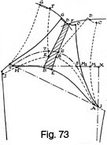
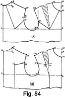

Early 1940's—Ladies' Garment Cutting and Making
by
F. R. Morris
Chapter VIII—The Construction of Patterns for Raglans
IN recent years the raglan coat style has found great favour with designers and the public generally. No longer does the mention of a "raglan" bring to mind a garment of rain-proof style and stereotyped design cut on loose-fitting lines; instead, to-day an entirely different outlook is held.
Raglans are now made with line and style; the sleeve is inserted for its value in design rather than for utility. Another innovation is the use of raglan sleeves with other than loose-fitting styles, for looked upon as having design value they may be adapted to either close- or loose-fitting garments.
There seems to be an atmosphere of difficulty surrounding the cutting of raglan sleeves. Admittedly, the variations of these sleeves, which are required without a seam over the shoulder, present difficulties which can be met only by a compromise. The material used also must be considered; a close weave gives less to the shoulder than a looser texture, and adjustment in the sleeve must be made accordingly.
The principal point to keep in mind is the position of the shoulder seam. For raglans and all garments of this character, including split-sleeve and drop-shoulder designs, the seam must be exactly on the top of the shoulder. Loose-fitting garments are intended to hang from the shoulders as an essential feature of their design, and the effect of the design is ruined if the shoulder seam slopes back over the shoulder to give an impression of falling-away from the figure. With raglan sleeves the location of the shoulder seam right in the centre of the shoulder enables the raglan seam runs to be balanced equally each side. Too often we see raglan coats with creases from the back to the front shoulder caused by the retention of a similar back neck width to a chesterfield style with the result that all the seams are placed too far back from the front. Another point to note is the necessity of easing-in the back shoulder seam to the forepart seam. While this operation may be faithfully carried out when making set-in sleeve shoulders, it is often neglected in the making of raglans. Obviously, what is correct and necessary for one style applies with equal force to the other. A lot of the trouble experienced with raglan sleeves and shoulders is caused by this small factor. Failure to ease the shoulder to the front does not help in the need for spring over the shoulder point in front, over which, in raglans, there always seems to be tightness.
The draft basis as described hitherto provides for the shoulder seam on the top of the shoulder at the scye; it is therefore necessary to adjust this seam at the neck further towards the front. The adjustment required is ½ inch, and, in this book, drafts embodying raglan, drop-shoulder or split-sleeves will be described with the necessary adjustment made.
Variation of the Shoulder Seam Position (Fig. 54)
For the purpose of clarity the system will be described for the shoulder construction in full as usually drafted, and then the variation superimposed thereon.
The draft is based upon the normal 34-inch bust standard, scale 17 inches.
To draft—
Commence by drawing line X to 2, the length to the natural waist.
- 1 from X = the back depth = one-third of the scale plus 1¾ inches.
- 2 from X = the waist length from X.
- 3 from X = one-sixth of the scale less ¼ inch.
- Square up from 3 to 4 1 inch.
- Shape from 4 to X for the back neck curve as shown.
- 5 from 1 = the half-back width plus ¼ inch.
- Square up from 5 to 6 as indicated.
- 7 from 1 = half the bust measure plus 2 inches.
- Square up from 7 to 8 equal to X to 1 at the back.
- 9 from 8 = one-twelfth of the scale.
- 10 and 9 = one-sixth of the scale.
- 11 from 7 = half the scale less ¾ inch.
- 12 from 11 = one-sixth of the scale.
- Square up from 12 to 13 equal to 7 to 9 less ½ inch.
- 14 is midway of 5 to 11 for the position of the sideseams and shoulder slope determination point.
- Square from 14 up to 15 one-third of the scale plus ¼ inch.
- Square down from 14 to 16.
- Join 15 to 4 and 13.
- 17 is located where the line from 15 to 4 is intersected by the line from 5 to 6.
- 18 from 17 = ½ inch. Shape the back shoulder seam run from 18 to 4 as indicated.
- 19 from 13 = 4 to 18 less ½ inch.
- 20 and 21 are each ½ inch below the breast line for the base of the scye. This quantity is used when the raglan design is intended to be cut fairly close up.
- Square down from 7 to 22 at the front centre line.
- 23 from 9 = one-sixth of the scale.
- Shape the neck curve as shown from 23 to 10.
- 24 is midway of 11 to 7.
- 25 from 13 = 13 to 10 pivoted from 24.
- Shape the bust dart from 24 to 13 and 25 as indicated.
The variation from the normal draft is as follows—
- Continue the back neck curve ½ inch from 4 to 26.
- Square down from 26 to 27.
- 27 from X = one-sixth of the scale net for the difference of construction.
- Shape the back shoulder seam from 26 to point 18.
- At the front shoulder, 28 is lowered the same quantity below 10 that 26 is raised above 4.
- 29 from 13 = 3/8 inch, or the extent of the variation of the back shoulder seam at this point.
- 30 from 29 = 29 to 28 pivoted from 24.
- Reshape the front shoulder seam from 28 to 29 and from 30 to 19 to complete the variation of the shoulder seams.
 The Raglan Seam Positions (Fig. 55)
The Raglan Seam Positions (Fig. 55)

There are many positions for the raglan seams on the shoulder, all of which are a matter of style and do not interfere with the basic constructional method as presented herewith. From the point of view of style, it is always advisable to keep the seam runs fairly high on the shoulders to obviate the tendency of this style to give a sloping-shoulder appearance. Quite often, however, fashion decrees a sloping-shoulder silhouette at one season and a square effect the next, and it is up to the designer to keep au fait with the current mode.
From the making point of view, it is essential that the raglan seams at the neck do not converge to practically nothing. It does not give either the cutter or the tailor much chance of success if there is not sufficient distance between the two horns of the sleeve to permit ease of sewing-out. The author believes in allowing for the horns of the sleeve to be each ½ inch wide at the collar seam; in addition to ease of making, an improved appearance is thereby gained. It has also been found from experience that a raglan coat does not require a back width in proportion to the normal apart from any variation of seam placement.
To make the variation for the raglan seam runs proceed as follows—
- Points X to 30 are as described in Fig. 54, with the exception that the constructional lines of the normal shoulders are omitted.
- Therefore 9 from 8 = one-twelfth of the scale less ½ inch.
- A is the front sleeve pitch, ¾ inch up from the base of the scye line at 20.
- B is the back pitch, half X to 1 up from point 5.
- To draft the back raglan seam run, mark back to 31 from 26½ inch, the width of the sleeve horn at the collar seam.
- 32 from the back pitch B = 3/8 inch.
- Join 32 to 31 by a construction line.
- Shape the seam run from 32 to 31 as shown, adding ½ inch of curve between the two points.
- Continue the seam run from 32 to finish at the back scye 1½ inches below pitch B.
- At the front shoulder 33 is ½ inch below 29 for the sleeve-horn width.
- Join the constructional line from 33 to the front pitch A as shown.
- Shape the seam run between these points, adding ¾ inch of curve.
- The bust dart has now to be taken into account. To mark the complete seam run to terminate at the front-neck point, 35 from 29 equals the distance from 34 to 30.
- 36 from 30 = 37 from 29.
- 38 from 28 = the distance 33 is below 29.
- Shape the seam run from 38 to 35, and when the bust dart is sewn out
38, 35 and 34 to the front pitch will be one seam.
- If the garment is cut with a gorge or underarm seam dart, the raglan seam run will be as marked from the front pitch to 33, except, of course, that the height of 33 from the breast line will be automatically increased by the working out of the different systems.
This completes the shaping of the raglan seams on the shoulders.
The Shoulder Sections (Fig. 56)
Fig. 56 indicates the shoulder sections cut away from the pattern and ready to be superimposed upon the normal sleeve draft. In the author's opinion, the most accurate method of cutting raglan sleeves is to cut the shoulder sections away and lay them upon the sleeve draft to obtain the shape of the horns. Many cutters use this method in practice in preference to the principle of obtaining the factors of construction by measuring the lengths of the raglan seams and transposing them upon the sleeve draft by sweeps and pivoting. The latter method may be quicker in practice, so it is advisable first to understand thoroughly the method of superimposing the shoulder sections on the sleeve, and then evolve a system to give equal results without the necessity of always cutting away the shoulder parts.
Fig. 56 also shows how the two sections of the front shoulder appear when the dart has been closed.
Now with regard to the seams to be allowed and accounted for, the back shoulder seam run is now the shape of the raglan seam run 31 to 32 and C, and has a seam allowed for in the construction of the system. Therefore, no seams are allowed round the shoulder section at 26 to 18 and 31 to 32 and C.
Similarly, at the front shoulder a seam is allowed from 38 to 35 and 34 to the front pitch A and all round the scye. Seams are required from 19 to 28 and from 38 to 35 and A on the shoulder section.
The two lower diagrams indicate how the seams are added to the cut-away shoulder sections.
Preliminary Sleeve Construction (Fig. 57 (a))
Fig. 57 (a) illustrates the method adopted of superimposing the shoulder sections upon a normal sleeve draft. For raglan sleeves, it is advisable to cut them slightly wider than set-in sleeves from the point of view of ease in wear.
For the purpose of the draft, the necessary scye measures are derived from the shoulder section of Fig. 55.
- Total scye circumference = 16½ inches.
- Top-scye circumference = 9 inches.
- Under-scye circumference = 7½ inches.
To draft—
Square from X.
- 1 from X = the height of the back pitch from the base of the scye line less ½ inch.
- 2 from 1 = the top-scye circumference applied diagonally.
- 3 from 2 = one-third of the diagonal measure 1 to 2 plus ½ inch.
- 4 from 3 = the crown height, 1½ inches, as may be found by sweeping from a ¼ inch seam below the back and front shoulder ends and where these sweeps intersect to the level of the back pitch from the breast line.
- 5 is midway of 3 to X. Shape the sleeve crown as shown from 1 to 5, 4 and 2.
- 6 from 2 diagonally = the required sleeve length less the half-width of the back.
- 8 from 6 = 1 ¼ inches.
- Square out from 7 to 8 and 9.
- 8 from 7 = ¾ inch. Join 8 to 1.
- 9 from 8 = one-third of the total scye circumference net.
- Join 9 through 6 to locate point 10.
- 11 for the position of the elbow is midway 1 to 10.
- 12 from 11 = 1¼ inches always.
- Join 2 to 9 to locate point 13 on the line squared up from 11.
- 14 from 13 = 2 inches. Shape from 14 to 9 for provisional sleeve construction.
- Add ¾ inch to the top-sleeve at 15, 16 and 17 for the three-quarter
sleeve finish.
- It is always advisable to cut all raglan sleeves in this way, so that the seam is well out of sight tinder the arm. Take the front shoulder section before the seams have been added and place in position upon the sleeve crown.
- 18 from 1 on the diagonal line 1 to 2 is a ¼ inch seam, for, as
a seam is allowed round the scye at this section, there is only the need
for one seam
to be allowed at 18 on the shoulder section. Overlap the shoulder section
below the sleeve crown ½ inch or two seams at 19. The reason for this is
that there is not an over-shoulder sleeve seam in a raglan and the shoulder
and sleeve are cut in one piece.
- After the shoulder section has been superimposed upon the sleeve, mark the seams to be allowed as shown by the solid lines.
- The back shoulder section is laid upon the sleeve in like manner.
- 20 from 2 on the diagonal line from 1 to 2 equals ½ inch or two seams; the difference from the front seam construction is explained by the fact that, where the back section overlaps the sleeve, seams are allowed on both parts; hence the need for the reduction of ½ inch.
- 21 is overlapped ½ inch in a similar manner to the front shoulder section.
- Mark the necessary seam round the back horn of the sleeve as shown.
- Shape from 27 to 14 to complete the preliminary sleeve
draft.
- For drafting the raglan sleeve without cutting away the shoulder sections, we must obtain our data from the superimposition of the sections as described.
Raglan Sleeve Standard Basis (Fig. 57 (b) )
The sleeve system described is identical in shape and construction with the sleeve systematized by Fig. 57 (a), and is obtained by a method of direct measurements of the scye and shoulder sections. In order to give an explanation of the method, reference will be made to Fig. 55 in the constructional matter.
Scye measures are as enumerated for Fig. 57 (a).
To draft—
Square from X.
- 1 from X = the height of the back pitch above the base of the scye line less ½ inch.
- 2 from 1 = the top-scye circumference applied diagonally.
- 3 from 2 = one-third of 2 to 1 plus ½ inch.
- 4 from 3 = the crown height = 1½ inches.
- 5 is midway of 3 to X.
- Shape the sleeve crown from 1 to 5, 4 and 2.
- 6 from 2 = the sleeve length applied diagonally from 2 less the width of the half-back measure.
- 7 from 6 = 1¼ inches.
- Square out from 7 to 8 and 9.
- 8 from 7 = ¾ inch. Join 8 to 1 as shown.
- 9 from 8 = one-third of the total scye circumference net.
- Join 9 to 6 to locate point 10.
- 11 is midway of 1 to 10 for the elbow position.
- 12 from 11 = 1¼ inches.
- Square up from 12 to 13 and 14.
- 13 is located where the line from 2 to 9 is intersected by line 11 to 14.
- 14 from 13 = 2 inches.
To draft the raglan shoulder sections now proceed as follows—
- Measure from the front pitch A to point 38 in Fig. 55.
- Apply this quantity plus ¼ inch from 1 on the sleeve draft in an arc as 15.
- Measure round the front scye from A to 19 in Fig. 55 and apply this quantity from 1 round the crown of the sleeve to 16 plus ½ inch.
- Make a sweep from 16 to intersect the arc 15 at 17 equal to the front shoulder width less two seams.
- 18 from 17 = the width of the sleeve horn, ½ inch, plus ¼ inch seam.
- 19 from 17 = ¼ inch seam.
- Join 19 to 1 and hollow the sleeve run between these points ¾ inch to agree with the shape of the raglan shoulder on the body part.
- Take the measure from B to 26 in Fig. 55 and apply in an arc from 2 to 20.
- Measure round the scye from B to 18 in Fig. 55 plus
½ inch, and apply this quantity round the sleeve
crown from 2 towards the centre of the sleeve head.
- In this case the measure locates a point identical with 4; so to simplify the draft the latter point is substituted.
- Take the back shoulder width from 26 to 18 and apply this quantity less two seams from 4 to intersect the arc 20 at 21.
- 22 from 21 = the width of the sleeve horn, ½ inch, plus ¼ inch seam.
- 23 from 21 = ¼ inch seam.
- 24 from 2 = ¼ inch. Join 24 to 22 and hollow the sleeve seam run ½ inch between the two points.
- 25 from 24 = 1½ inches.
- Shape the hindarm sleeve seam run from 25 to 14 and 9.
- Shape the inside of the sleeve horns from 23 and 18 to 26.
- 27 is midway of 12 to 14.
- 28 is midway of 6 to 9.
- Shape the overarm sleeve seams from 26, overlapping ½ inch for seams at 27 and 28.
- 29 from 1 = one-sixth of the scale.
- Measure up the under-scye from the front pitch A to the lowered back pitch C in Fig. 55, and apply this quantity from 1 to 30 plus ½ inch.
- Sweep from 25 to 30, pivoting from 14.
- 31 from 14 = ½ inch. Reshape the under-scye
from 1 to 29, 30 and 31 for the shape of the under-sleeve.
- Add ½ inch to the top-sleeve at 32, 33 and 34 and reduce the under-sleeve seam a similar quantity at 35, 36 and 37 to complete the sleeve draft.
Single-Breasted Raglan (Fig. 58)
A smart loose-fitting raglan is shown in Fig. 58. Loose-fitting designs have had a new lease of popularity and are very suited to the modern woman. A full skirt is usually cut when the coat is worn without a belt, and a variation of style may be introduced by the "swing" or "box" back effect.
The author always endeavours, when cutting loose-fitting styles, to have the front sideseam running backwards from under the arm; in other words, to allow more "spring" on the front sideseam than on the back. The effect so obtained is much more stylish than the reverse and contributes to the loose, swinging appearance desired.
The fronts are fastened with three buttons, and a "Prussian" collar finishes the neck. Novel pockets are indicated, consisting of a sewn-on patch with a jeatted pocket inset.
Full-length coats do not look fashionable in loose-fitting styles; the latter should be worn either seven-eighths or three-quarter length.
Full measures for the draft are as follows—
- Chest = 32 inches.
- Bust = 34 inches.
- Hips = 38 inches.
- Natural waist length = 15 inches.
- Full length = 40 inches.
- Half-back width = 6½ inches.
- Working scale = half the bust girth = 17 inches.
Square from X.
- 1 from X = the back depth = one-third of the scale plus 1¾ inches.
- 2 from X = the natural waist length =15 inches.
- 3 from 2 = 8 inches for the hip level.
- 4 from X = the full length of the coat = 40 inches.
- 5 from X = the back neck width = one-sixth of the scale net.
- 6 from 5 = 1 3/8 inches. Shape the back neck curve from 6 to X.
- 7 from 1 = the half-back width plus ¼ inch.
- Square up from 7 to 8.
- 9 from 1 = the half-bust measure plus 2 inches.
- 10 from 9 = X to 1 at the back.
- 11 from 10 = one-twelfth of the scale less ½ inch.
- 12 from 11 = one-sixth of the scale.
- 13 from 9 = half the scale less ¾ inch.
- 14 from 13 = one-sixth of the scale.
- Square up to 15 equal to 9 to 11 less ¾ inch.
- 16 is midway of 7 to 13.
- Square up from 16 to 17 one-third of the scale plus ¼ inch.
- Join 17 to a point ½ inch below 6 and to 15.
- 18 is located where the line from 17 to 6 is intersected by line 7 to 8.
- 19 from 18 = ½ inch. Shape the back shoulder seam run from 19 to 6.
- 20 from 15 = the back shoulder width 6 to 19 less ½ inch.
- Square down from 9 to 21.
- 22 from 21 = ¼ inch. Line down the front centre line from 9 to 22, 23 and 24.
- 25 from 24 = ¾ inch.
- 26 from 13 and 27 from 7 are each ½ inch below the breast line for the base of the scye.
- 28 from 7 = 1 ½ inches for the position of the sideseam.
- Square down from 28 to 31, 32 and 33.
- 29 from 28 = ¼ inch for the top of the back sideseam.
- 30 from 28 = ¼ inch for the top of the front sideseam.
- 34 and 35 from 32 = half the difference between the bust and hips measures less ½ inch.
- 36 from 35 = 1 inch. This quantity may be increased or decreased in proportion to the amount of width in the skirt.
- 38 from 34 = ½ inch.
- Draw the front sideseam from 30 to 36 and 37.
- Draw the back sideseam from 29 to 38 and 39.
- Shape the bottom edge run from 25 to 37 as shown.
- 40 from 11 = one-sixth of the scale less ½ inch.
- Shape the neck curve as shown from 40 to 12.
- Add 2 inches at 41 from 40 all down the fronts to 42 for the single-breasted front edge.
- 43 is located midway of 13 to 9.
- 44 from 15 = 15 to 12 pivoted from 43. Mark out the bust dart as shown.
- The back pitch B is located at half the back depth X to 1 up from 7.
- 45 from 6 = ½ inch.
- 46 from B = 3/8 inch. Join 46 to 45 and add ½ inch of curve to the shoulder seam as shown.
- 47 from 15 = ½ inch. Join 47 to the front pitch A and add ¾ inch of curve to the seam.
- 48 is located where the seam from 47 intersects the bust dart.
- 49 is located where the construction line from 47 to A is intersected by the bust dart.
- 50 from 15 = 44 to 48.
- 51 from 15 = 44 to 49.
- Complete the shape of the front raglan seam by joining to 52 ½ inch below 12.
The pocket is placed 9 inches below the front of the scye and is made 8 inches in length by 2 ½ inches in width.
Provision for Increase of Width in the Skirt (Fig. 59)
Fig. 59 shows how to infuse extra width or "drapery" in the skirt of a loose-fitting garment. The "swing" or "box" back is achieved by splitting up the pattern from a point vertically below the back pitch C and opening out approximately 2 to 4 inches at the bottom edge. If the extra width is not required at the sideseams under the arms the author reduces at this part half the amount let in for the "box" effect.
Care must be taken that the back sideseam does not run forward after the adjustment has been made. The author checks this up by laying the pattern in the "square" after recutting and, if necessary, reduces the back seam and adds this quantity to the front sideseam.
For style the author has often added front drape when cutting this type of "swagger" coat. In fact, these days loose-fitting garments possess a chic of their own that to the older generation is inexplicable. To them a raglan is just another loose coat and easy to cut, yet therein lies the snag. What is apparently easy to cut must have "line" of some sort infused therein to give style to such a straightforward design, and style features, like "swing" backs and draped fronts, are a boon to the cutter of intuition. The fronts are opened up from a point 3 inches up from the front pitch vertically to the bottom edge, and approximately the same amount is inserted as at the back.
Raglan Sleeve with Dart Shoulder (Fig. 60)
Many raglan sleeves for ladies' coats are cut without a seam over the forearm, but instead have a dart only from the neck to the shoulder end.
For the purpose of the sleeve draft, measurements are derived from Fig. 55.
- Total scye circumference = 16½ inches.
- Top-scye circumference = 9 inches.
- Under-scye circumference = 7½ inches.
To draft—
Square from X.
- 1 from X = the height of the back pitch above the base of the scye less ½ inch.
- 2 from 1 = the top-sleeve width applied diagonally from 1.
- 3 from 2 = one-third of the measure 1 to 2 plus ¾ inch.
- 4 from 3 = the crown height = 1½ inches.
- 5 is midway of 3 to X.
- 6 from 2 diagonally = the sleeve length less half the width of the back measure.
- 7 from 6 = 1¼ inches.
- Square out from 7 to 8 and 9.
- 8 from 7 = ¾ inch.
- 9 from 8 = one-third of the total scye circumference net.
- Line from 9 to 6 to locate 10 on the line joining 1 to 8.
- 11 is midway of 1 to 10 for the position of the elbow.
- 12 from 11 = 1¼ inches.
- Square out from 11 to 13 and 14.
- 13 is located where the line from 11 is intersected by a line from 2 to 9.
- 14 from 13 = 2 inches.
- Measure the distance from the front pitch A to 36 plus 37 to 38 in Fig. 55, and apply this quantity in an arc from 1 to 15 plus ¼ inch.
- Measure round the front scye from A to 19 in Fig. 55, and apply this quantity round the crown of the sleeve from 1 to 16 plus ½ inch.
- Measure the width of the front shoulder seam from 19 to 30 plus 29 to 28 in Fig. 55 and sweep an arc from 16 to 17 less ½ inch.
- 18 from 17 = the width of the sleeve horn plus ¼ inch, ¾ inch in all.
- 19 from 17 = ¼ inch seam.
- Join 19 to 1 and hollow the seam ¾ inch to match the run of the shoulder seam at this point.
- Measure from the back pitch B to 26 in Fig. 55, and apply this quantity from 2 in an arc to 20.
- 21 from 2 = the measure from the pitch B to the shoulder end at 18 plus ½ inch applied round the sleeve crown.
- Measure the width of the back shoulder seam from 26 to 18 in Fig. 55 and sweep this quantity less ½ inch from 21 to intersect the arc 20 at 22.
- 23 from 22 = ¾ inch.
- 24 from 22 = ¼ inch seam.
- 25 from 2 = ¼ inch.
- 26 from 25 = the distance the back pitch C is below B in Fig. 55 less ¼ inch.
- Join 25 to 23 and hollow ½ inch between the two points to agree with the shape of the back-shoulder seam.
- Shape from 26 to 14 and 9 for the hindarm seam run.
- Shape the shoulder-seam sections of the sleeve horn from 18 to 16 and 27 and from 20 to 21 and 27.
- 28 from 1 = one-sixth of the scale.
- 29 from 1 diagonally = the distance round the under-scye plus ½ inch less the distance the back pitch is lowered to C in Fig. 55.
- 30 from 14 = ½ inch.
- Complete the shape of the under-sleeve from 1, 28, 29 and 30 to 9.
Double-Breasted Ulster Coat (Fig. 61)
A typical belted ulster travelling coat is illustrated by Fig. 61. The fronts are double-breasted with a storm collar and heavy lapels, slanting or patch pockets and a two-button fastening. An all-round belt confines the garment to the figure, and, to ensure that there is not too much material under the belt, the sideseam overlap is reduced from the allowance made for the loose-fitting raglan. A gorge-cut is placed under the lapel for bust-shape provision.
Full measures are as follows—
- Chest = 34 inches.
- Bust = 36 inches.
- Hips = 40 inches.
- Natural waist length = 15½ inches.
- Full length = 45 inches.
- Half-back width = 6¾ inches.
- Working scale = one-third of the bust girth plus 6 inches = 18 inches.
To draft—
Commence by drawing line X to X, the full length of the coat, 45 inches.
- 1 from X = the back depth = one-third of the scale plus 1¾ inches.
- 2 from X = the natural waist length = 15½ inches.
- 3 from 2 = 8 inches for the hip line.
- 4 from X = one-sixth of the scale.
- 5 from 4 = 1 3/8 inches.
- Shape from 5 to X for the back neck curve.
- 6 from 1 = the half-back width plus ¼ inch.
- Square up from 6 to 7.
- 8 from 1 = half the bust measure plus 2 inches.
- 9 from 8 = the back depth 1 to X.
- 10 from 9 = one-twelfth of the scale less ½ inch.
- 11 from 8 = half the scale less ¾ inch.
- 12 from 11 = one-sixth of the scale.
- Square up from 12 to 13 equal to 8 to 10.
- 14 is midway of 11 to 6.
- Square up from 14 to 15 one-third of the scale plus ¼ inch.
- Join 15 to 16 ½ inch below 5 and 15 to 13.
- 17 is located where the line from 15 to 16 is intersected by the line from 6 to 7.
- 18 from 17 = ½ inch. Shape the back shoulder seam from 18 to 5 as shown.
- 19 from 13 = 5 to 18 less ½ inch.
- 20 and 21 are each ½ inch below the breast line for the base of the scye.
- Square down from 8 to 22.
- 23 from 22 = ¼ inch. Mark the front centre line from 8 to 23, 24 and 25.
- z6 from 6 = 1½ inches for the position of the sideseam.
- Square down from 26 to 27, 28 and 29.
- 30 and 31 from 28 = half the difference between the bust and hips measures less ½ inch.
- 32 from 26 = ¼ inch.
- 33 from 27 = ½ inch.
- 34 from 30 = ¼ inch.
- 35 from 29 = 28 to 34 plus 1 inch.
- Shape the sideseam from 32 to 33, 34 and 35.
- 36 from 26 = ¼ inch.
- 37 from 27 = ½ inch.
- 38 from 31 = ½ inch.
- 39 from 29 = 28 to 38 plus 1 inch.
- Shape the sideseam from 36 to 37, 38 and 39.
- 40 is midway of 8 to 11.
- 41 from 40 = 2 inches.
- Join 41 to 10.
- 42 from 10 = one-twelfth of the scale.
- 43 from 41 = one-fourth of the scale.
- Join 43 to 42 for the shape of the gorge dart as shown.
- 44 from 10 = one-sixth of the scale less ½ inch.
- Square from 44 to 45.
- 46 from 43 = 43 to 45.
- 47 from 13 = 1 inch. Shape from 46 to 13 as shown.
- Add 4 inches from 23 to 48 for the double-breasted front overlap.
- 49 from 25 = 4 inches.
- Line from 48 to 49 as shown, drop the bottom edge ¾ inch to 50 from 25 and complete the shape of the bottom edge as indicated.
- 52 from 44 = 3 ½ to 4 inches. Complete the shape of the lapel as indicated.
- 51 from 13 = 1 inch. Shape the crease line from 51 to 2 inches above 48.
- 53 from 13 = ½ inch. Join to the front pitch A and add ¾ inch of round between the two points.
- 54 from B = 3/8 inch.
- 55 from 5 = ½ inch.
- Join 54 to 55, and add ½ inch of round between the two points.
The slant pocket is placed 9 inches below the front of the scye to complete the draft.
Two-piece Sleeve Basis Draft (Fig. 62)
Fig. 62 illustrates the draft of a two-piece sleeve with a seam over the shoulder and under the arm. This draft is based on the standard formula for the construction of one-piece sleeves, with the alteration for the raglan shoulders superimposed.
Scye measurements used are derived from Fig. 61.
- Total scye circumference = 17½ inches.
- Top-scye circumference = 9½ inches.
- Under-scye circumference = 8 inches.
To draft—
Square lines from X.
- 1 from X = the distance from the back pitch B in Fig. 61 to the base of the scye at 21 on the back.
- 2 from 1 = ½ inch.
- 3 from 2 = the top-scye circumference measurement applied from 2 diagonally to 3.
- 4 from 3 = one-third of the distance from 2 to 3 plus ¾ inch.
- 5 from 4 = the crown height = 1½ inches.
- 6 is midway of X to 4.
- Shape the sleeve head from 2 to 6, 5 and 3.
- Square down from point 4 to 7 the full sleeve length less the half-back width applied from 3.
- 8 from 7 = ¾ inch.
- Square each way from 8.
- 9 and 10 from 8 = the cuff width = one-third of the scye circumference.
- 11 from 10 = ¼ inch.
- 12 from 9 = ¼ inch.
- 13 from 12 for the position of the underarm seam at the wrist = one-third of the distance from 12 to 11.
- Measure round the front scye on the coat from the pitch to the underarm seam and apply this quantity from 2 to 14.
- Join 2 to 12 and then by this line square across from 14 to 15, making 15 from 2 equal to 14 to 2.
- By line 2 to 12, square across from 13 to 16, making 16 from 12 equal to 12 to 13.
- Measure round the under-scye on the coat from the back sleeve pitch to the underseam and then sweep this quantity from 3 to 17 plus ½ inch.
- Join 17 to 3 and 13.
- Square down from 3 to 18, level with point 11.
- 19 from 18 = 18 to 11.
- 20 is squared from 13 by line 3 to 18, and 20 from this line equals the distance from the line to 17.
- Square by this line from 17 to 21, making 21 from the line an equal distance from the line to 17.
- Shape the bottom edge run of the cuff from 16 to 12, 8, 11, 19 and 20.
- To construct the shoulder sections, measure from the front pitch A to 53 in Fig 61, and apply this quantity plus ¼ inch in an arc from 2 to 22 as illustrated.
- Measure round the front of the scye from the pitch A to the shoulder end at 19 in Fig. 61 and apply this quantity round the sleeve crown from 2 to 23 plus an additional ½ inch.
- Measure the width of the front shoulder seam from 19 to 13 in Fig. 61 and apply this quantity in a sweep from 23 to 24 less two seams, ½ inch.
- 24 is located where the two arcs intersect.
- 25 from 24 on the arc from 23 = ¾ inch.
- 26 from 24 on the arc from 2 = one seam or ¼ inch.
- Join 2 to 26 and hollow the raglan shoulder seam of the sleeve by a quantity of ¾ inch to agree with the run of the shoulder seam on the coat.
- Measure the back shoulder seam from B to 5 in Fig. 61, and apply this quantity in an arc from 3 to 27.
- Measure round the back scye from B to the shoulder end at 18 in Fig. 61 and apply this quantity round the sleeve crown from 3 to 28 plus ½ inch.
- Measure the width of the back shoulder seam from 18 to 5 in Fig. 61 and apply this quantity less ½ inch in a sweep from 28 to intersect the arc from 3 at point 29.
- 30 from 29 on the arc from 28 = ¼ inch.
- 31 from 29 on the arc from 3 = ¾ inch.
- 32 from 3 = ¼ inch. Join 32 to 31 and hollow the raglan shoulder seam ½ inch to agree with the run of the seam on the back part.
- Shape the run of the under-sleeve from 32 to 21, hollowing ½ inch.
- Shape the front raglan shoulder seam from 25, through 23, 4 and ¼ inch or a seam behind the line from 4 to 8.
- Shape the back shoulder seam from 30 through 28 to 4 and ¼ inch in front of the centre line from 4 to 8.
When shaping the shoulder seams down the centre of the sleeve, make sure that the width of the sleeve is not reduced below point 4 by overlapping the sleeve seams too low, for with a raglan sleeve the fullness that is usually infused into the sleeve for a set-in style is necessarily eliminated, but there is still the need for the same width of sleeve over the muscle.
One-piece Sleeve Basis Draft (Fig. 63)
Fig. 63 illustrates the draft of a one-piece raglan sleeve with a dart shoulder and a plain hindarm without a wrist dart. This type of sleeve is generally utilized for weatherproof coats and is preferable to the sleeve which is absolutely plain in construction without either a shoulder dart or overshoulder seams. It is impossible to cut a satisfactory raglan sleeve without provision for the shape of the shoulder by means of a dart or overshoulder seams; the plain-shoulder sleeve type always has a tendency to drag on the shoulder point in wear.
Scye measurements for the sleeve draft are identical with those given previously for Fig. 62.
To draft—
Square from X.
- 1 from X = the height of the back sleeve pitch B from the base of the scye at 21 in Fig. 61.
- 2 from 1 = ½ inch.
- 3 from 2 diagonally = the distance round the top-scye between the front pitch A and the back sleeve pitch B in Fig. 61.
- 4 from 3 = one-third of the distance from 2 to 3 plus ¾ inch.
- 5 from 4 = the crown height = 1½ inches.
- 6 is midway of X to 4.
- Shape the sleeve head from 2 to 6, 5 and 3.
- Square down from 4 to 7 the full sleeve length applied from 3 less the half-back width.
- Square each way from 7.
- 8 from 7 = ¾ inch.
- 9 and 10 from 8 = the cuff width = one-third of the scye circumference.
- 11 from 9 = ¼ inch.
- 12 from 10 = ¼ inch.
- Shape from 11 through 8 to 12.
- Join 1 to 11 and 3 to 12.
- Measure round the under-scye on the coat from the front pitch A to the sideseam in Fig. 61 and apply this quantity from 2 to 13.
- By the line joining 2 to 11, square across from 13 to 14, making the distance from 2 to 14 equal to 2 to 13.
- The underarm seam of the sleeve is located at 15, one-third of the cuff width from 11.
- By the line joining 2 to 11, square across from 15 to 16, making the distance from 15 to 11 equal to 11 to 16.
- Shape from 16 to 11.
- Measure round the under-scye from the back sleeve pitch B to the underarm seam in Fig. 61 and apply this quantity from point 3 to 17 plus ½ inch.
- By the line joining 3 to 12, square across from 18 to 15, making 18 from 10 equal to 10 to 15.
- To construct the shoulder section, measure from the front sleeve pitch A to 53 in Fig. 61, and apply this quantity in an arc from 2 to 19 plus ¼ inch.
- Measure round the front scye from the front pitch A to the shoulder end at 19 in Fig. 61 and apply this quantity plus ½ inch round the sleeve head from 2 to 20.
- Measure the width of the shoulder seam from 19 to 13 in Fig. 61 and apply this quantity in an arc from 20 to 21 less two seams or ½ inch.
- 21 is located where the arc from 2 is intersected by the arc from 20.
- 22 from 21 on the arc from 2 = ¼ inch or a seam.
- 23 from 21 on the arc from 20 = ¾ inch.
- Join 2 to 22 and hollow the sleeve seam run ¾ inch to correspond with the run of the shoulder seam between these points.
- Measure the distance from the back sleeve pitch B to 5 in Fig. 61, and apply this quantity from 3 to 24 in a sweep.
- Measure round the back scye from the pitch to the shoulder seam at 18 in Fig. 61 and apply this quantity round the sleeve head from 3 to 25 plus ½ inch.
- Measure the width of the back shoulder seam and apply this quantity less ½ inch in a sweep from 25 to 26.
- 26 is located where the sweep from 3 is intersected by the arc from 25.
- 27 from 26 = ¼ inch.
- 28 from 26 on the arc from 3 = ¾ inch.
- 29 from 3 = ¼ inch.
- Join 29 to 28 and hollow the seam ½ inch between these points to agree with the run of the seam on the back at this section.
- Shape the shoulder dart from 23 to 20 and 4 and from 27 to 25 and 4.
- By the line joining 3 to 12, square across from 17 to 30, making the distance from 30 to line 3 to 12 equal to the corresponding distance from 17 to the same line.
- Shape the under-sleeve from 29 to 30, hollowing ½ inch as shown.
- Shape the under-sleeve seams from 30 to 18 and 14 to 16 to complete the sleeve draft.
- Shape from 12 to 18 at the wrist.
A Close-fitting Raglan Coat (Fig. 64)
A close-fitting raglan coat is illustrated by Fig. 64. The fronts have a lancer-front effect and an overwrap fastening with one button at the shoulder and three at the waist. A sidebody seam is inserted to gain waist shape, the seam runs harmonizing with the shoulder seams, and the neck may be either collarless or finished with a scarf or stand-and-fall collar.
For fitting raglans, the scye should not be cut too deep, otherwise the balance of the garment will be disturbed and free movement of the arms restricted.
The draft is arranged in accordance with the measurements of a woman of 36-inch bust girth.
Full measurements are as follows—
- Chest = 34 inches.
- Bust = 36 inches.
- Waist = 29 inches.
- Hips = 40 inches.
- Natural waist length = 15½ inches.
- Full length = 46 inches.
- Half-back width = 6¾ inches.
- Working scale = one-third of the bust girth plus 6 inches = 18 inches.
To draft—
Commence by drawing line X to X, the full length of the coat, 46 inches.
- 1r from X = one-third of the scale plus 1¾ inches.
- 2 from X = the natural waist length = 15½ inches.
- 3 from 2 = 8 inches below for the hip level.
- 4 from X = the back neck width = one-sixth of the scale.
- 5 from 4 = the height of the back neck = 1 3/8 inches.
- Shape the back neck run from 5 to X as shown.
- 6 from 1 = the back width.
- Square up from 6 to 7 as shown.
- 8 from 1 = the half-bust measure plus 2 inches.
- Square up from 8 to 9 equal to X to 1 at the back.
- 10 from 9 = one-twelfth of the scale less ½ inch.
- Square out from 10 to 11 one-sixth of the scale.
- 12 from 8 = one-fourth of the bust size less ¾ inch.
- 13 from 12 = one-sixth of the scale.
- Square up from 13 to 14 equal to 8 to 10 less 3/8 inch.
- 15 is midway of 12 to 6.
- Square up from 15 to 16 one-third of the scale plus ¼ inch.
- Join 16 to point 17 ½ inch below 5 and to 14.
- 18 is located where the line from 16 to 5 is intersected by the line from 6 to 7.
- 19 from 18 = ½ inch. Shape the back shoulder seam from 19 to 5 as shown.
- 20 from 14 = 5 to 19 less ½ inch.
- 21 and 22 are each ½ inch from 12 and 6 for the base of the scye.
- Shape the scye as shown, locating the back pitch B at half the back depth up from 6 and the front pitch ¾ inch up from 21.
- Square down from 8 to 23.
- 24 from 23 = ¼ inch. Line the centre front line from 8 to 24, 25 and 26.
- Square down from 15 to 27, 28 and 29.
- 30 and 31 are 3/8 inch from 27 for the waist suppression.
- Overlap on the hips from 28 to 32 and 33 half the difference between the bust and hips measures less ½ inch.
- 34 from 29 and 35 from 29 are each equal to 32 to 28 plus 1½ inches.
- Shape the sideseams from 15 to 30, 33 and 35 and from 15 to 31, 32 and 34.
- 36 from 2 = the half-waist measure plus 2¾ inches (waist 29 inches plus 2 inches for ease).
- 37 from 6 for the top of the sideseam = 2 inches.
- The hindarm seam of the sleeve is located at 37 in the construction of a three-piece sleeve to agree.
- 38 from 1 = one-third of the scale plus ½ inch.
- 39 from 2 = one-third of the scale less ¾ inch.
- 40 from 3 = one-third of the scale less ½ inch.
- 41 from X = one-third of the scale.
- Shape the sidebody seam from 37 to 38, 39, 40 and 41.
- 42 from 39 = two-thirds of the waist surplus shown at 36 to 23.
- 43 from 40 = ¼ inch.
- 44 from 41 = ¾ inch.
- Shape the sidebody seam from 37 to 42, 43 and 44.
- 45 from 10 = one-sixth of the scale less ½ inch.
- 46 from 45 = 4½ inches.
- 47 from 24 = 2 inches.
- 48 from 26 = 2½ inches.
- Shape the front edge run from 46 to 47 and 48 as indicated.
- 49 from 26 = ¾ inch. Shape the bottom edge run from 49 to the sideseam at 34.
- 50 is midway of 12 to 8.
- 51 from 14 = 14 to 11 pivoted from 50.
- Shape the bust dart from 50 to 14 and 51.
- 52 from 14 = ½ inch.
- Join 52 to the front pitch A and add ¾ inch of curve to the seam between these points.
- 54 from 14 = 53 from 51.
- 56 from 14 = 55 from 51.
- 57 from 11 = ½ inch.
- Join 56 to 57 and shape from 57 to 54.
- 58 from the back pitch B = 3/8 inch.
- 59 from 5 = ½ inch.
- Join 58 to 59 and add ½ inch of curve to the seam between these points.
The slanting pocket is located at 11 inches below the front of the scye to complete the draft.
The Deep-scye Raglan Sleeve
At the moment designers are featuring to a great extent the deep-scye sleeve in either raglan or magyar form. In addition to its use in conjunction with loose-fitting styles, it is also extensively used in close-fitting garments as a means of providing width and fullness about the shoulders in comparison with a slender waist and hip line.
From the point of view of style, this type of sleeve is being recognized as a decided asset to the "sporty" type of coat worn by the younger generation and is entirely divorced from its original purpose, that of a sleeve only suitable for sacque slip-on rain-proofs.
The draped effects of "dressy" coats also lend themselves to harmonizing with this type of sleeve, for a certain amount of fullness is always met with in construction owing to the need for allowing for freedom of movement. If the sleeve were cut to present an absolutely clean appearance at the front and back scye when the arm is down, it would be impossible to lift the arm without discomfort being felt; so that when this sleeve is being drafted provision must be made for freedom of movement, and to attain this end the sleeve is so constructed that what amounts to a "gusset" is added to the under-sleeve.
Alteration of the Scye for a Deep-scye Raglan (Fig. 65)
Fig. 65 shows the alteration made to the basis draft for a deep-scye raglan style. It is necessary to say that the scye should not be deepened too extremely in view of the impaired freedom of movement to the sleeve; at the most an increase in depth of 3½ inches from the breast line is allowable. The basis draft illustrated by Fig. 65 shows the sideseam construction of a loose-fitting garment and to this end is extended to the hip level. For the purpose of the system, the basis draft is arranged upon a 36-inch bust girth, a half-back width of 6¾ inches, and hip girth of 40 inches, while the working scale equals one-third of the bust girth plus 6 inches.
To construct the draft, commence by drawing the construction line from X to 1, the back depth, which is one-third of the scale plus 1¾ inches.
- 2 from X = the natural waist length = 15½ inches.
- 3 from 2 = the hip level = 8 inches below the waistline.
- 4 from X = the back neck width = one-sixth of the scale.
- 5 from 4 = 1 3/8 inches.
- Shape the back neck curve from 5 to X as shown.
- 6 from 1 = the half-back width plus ¼ inch. Square up from 6 to 7.
- 8 from 1 = the half-bust girth plus 2 inches.
- 9 from 8 = X to 1 at the back.
- 10 from 9 = one-twelfth of the scale less ½ inch.
- 13 squared out from 10 = one-sixth of the scale.
- 14 from 8 = one-fourth of the scale less ¾ inch.
- 15 from 14 = one-sixth of the scale.
- Square up to 16 from 15 equal to 8 to 10 less 3/8 inch.
- 17 is midway of 6 to 14.
- Square up from 17 to 18 one-third of the scale plus ¼ inch.
- Join 18 to a point ½ inch below 5 and to 16.
- 19 is located where the line from 18 is intersected by the line from 6 to 7.
- 20 from 19 = ½ inch. Shape the back shoulder seam 20 to 5.
- 21 from 16 = 5 to 20 less ½ inch.
- 22 and 23 are each ½ inch below the breast line for the base of the scye.
- Square down from 17 to 24 and 25.
- 26 and 27 from 25 = half the difference between the bust and hips measures less ½ inch.
- 28 from 17 = ¼ inch.
- 29 from 17 = ¼ inch.
- 30 from 27 = ½ inch. Shape the back sideseam from 29 to 30 to locate 31 on the waist line.
- 32 from 26 = 1 inch. Shape the front sideseam from 28 to 32 to locate point 33 on the waist line.
- 34 is midway of 14 to 8.
- 35 from 16 = 16 to 13 pivoted from 34.
- Shape the bust dart from 34 to 16 and 35.
- 36 from 16 = ½ inch. Join 36 to the front pitch A and add ¾ inch of curve to the seam between these points.
- 37 is located where the bust dart is intersected by the raglan shoulder seam from A to 36.
- Similarly 38 is found where the bust dart is intersected by the construction line from A to 36.
- 39 from 16 = 37 from 35.
- 40 from 16 = 38 from 35.
- 41 from 13 = ½ inch. Shape from 41 to 39.
- The back pitch B is located at half the back depth, X to 1, up from the breast line at 6.
- 42 from B = 3/8 inch.
- 43 from 5 = ½ inch. Join 43 to 42 and add ½ inch of curve to the seam between these points.
- 44 from 17 for the depth of scye = 3½ inches. Square from 44 to locate points 45 and 46 for the commencement of the sideseams.
- Mark in a ¼ inch seam at 45 and 46, and shape from 45 to 42 and 43 as shown.
- Shape from 46 to the front pitch A to complete the basis draft of a deep-scye raglan.
Two-piece Raglan Sleeve Construction (Fig. 66)
The shape of the scye of deep-scye raglans does not permit a sleeve to be cut on three-piece lines as a top- and under-sleeve with an overshoulder seam, except in the case of a pivot sleeve. Instead, all deep-scye sleeves are constructed from the standard one-piece sleeve basis to permit the shape of the under-scye seams of the body part to be incorporated with the sleeve draft in similar seam runs.
If the sleeve is drafted as deep as the scye of the coat, the freedom of movement in the sleeve will be seriously curtailed. To overcome this and to provide a maximum of ease commensurate with the style of garment, the sleeve base construction is lowered from the breast line by only half the actual deepening of the scye.
The scye measures for the construction of the basis deep-scye sleeve draft are ascertained from Fig. 65.
- Total scye circumference = 17½ inches.
- Top-scye circumference = 9½ inches.
To draft—
Square from X.
- 1 from X = the height of the back pitch B from the base of the scye at 23 in Fig. 65 less ½ inch.
- 2 from 1 = half the distance from 17 to 49 that the scye has been deepened in Fig. 65.
- 3 from 1 diagonally = the distance between the back and front pitches A and B in Fig. 65.
- 4 from 3 = one-third of the distance from 1 to 3 plus ¾ inch.
- 4 to 5 = the crown height = 1½ inches.
- 6 is midway of X to 4.
- Shape the sleeve head from 2 to 6, 5 and 3.
- Square down from 4 to 7 the full sleeve length less the half-back width applied from 3.
- Square each way from 7.
- 8 from 7 = ¾ inch.
- 9 from 8 and 10 from 8 = the cuff complete width = one-third of the scye circumference or to style.
- 11 from 10 = ¼ inch.
- 12 from 9 = ¼ inch.
- Shape from 12 to 11.
- Measure round the under-scye from A to the sideseam at 46 in Fig. 65 and apply this quantity from 1 to point 13.
- Join 1 to 12 and by this line square across from 13 to 14, making the distance from 13 to 1 equal to 1 to 14.
- The under-sleeve seam is located at 15, one-third of the cuff width from 12.
- By line 1 to 12, square across from 15 to 16, making 16 from 12 equal to 12 to 15.
- Square down from 3 to 17 for the width of the wrist dart.
- 18 squared back from 17 = the distance from 17 to 11.
- By the line joining 3 to 17, square across from 15 to 19, making 19 from 17 equal to 17 to 15.
- Shape the bottom edge of the cuff from 18 to 19.
- Measure round the under-scye from B to the sideseam at 45 in Fig. 65 and apply this quantity plus ½ inch from the sleeve point 3 to 20.
- By the line joining 3 to 17, square across from 20 to 21, making the two distances from the line equal.
- Join 21 to 19 and shape the under seam, hollowing ½ inch at the elbow.
- Join 14 to 16 and shape the front sleeve seam, hollowing ½ inch to agree with the hindarm seam run.
- To construct the shoulder section, measure the distance from the front sleeve pitch A to 37 plus 39 to 41 in Fig. 65 and apply this quantity plus ¼ inch in a sweep from 1 to 22 on the sleeve draft.
- Measure round the front of the scye from the sleeve pitch A to 21 in Fig. 65 and apply this quantity round the sleeve head from 1 to 23 plus ½ inch.
- Measure the width of the front shoulder seam from 21 to 35 and 16 to 13 in Fig. 65 and sweep this quantity from 23 to intersect the arc from 1 at 24.
- 25 from 24 on the arc from 1 = ¼ inch.
- 26 from 24 on the arc from 23 = ¾ inch.
- Join 1 to 25 and hollow the seam between these points ¾ inch to agree with the run of the raglan shoulder seam on the coat.
- Shape from 14 to 1 for the under-sleeve.
- Measure from the back sleeve pitch B to the shoulder at 5 in Fig. 65 and apply this quantity in an arc from 3 to 27.
- 28 from 3 = the distance from the back sleeve pitch B to the shoulder end at 20 in Fig. 65 plus ½ inch.
- Measure the width of the shoulder seam from 5 to 20 in Fig. 65 and apply this quantity less ½ inch in an arc from 28 to locate point 29 on the arc 27.
- 30 from 29 on the arc from 28 = ¼ inch.
- 31 from 29 = ¾ inch on the arc from 3.
- 32 from 3 = ¼ inch.
- Join 31 to 32 and hollow the seam ½ inch between the points to agree with the shoulder seam run.
- Shape the front raglan shoulder and sleeve seam from 26 to 23, 4 and one seam behind the centre line from 4 to 8.
- Shape the back sleeve seam from 30 through 28 to 4 and ¼ inch in advance of the centre line of the sleeve.
- The wrist dart is made 8 inches in length from 17 to 33.
- Shape out the dart from 11 and 18 to 33.
- Shape the under-sleeve from 32 to 21, hollowing ½ inch as shown to complete the sleeve draft.
Comparison between Sleeve Depths in Relation to the Scye Depth (Fig. 67)
Fig. 67 illustrates clearly the comparative relationship between the depth of the coat scye and the sleeve.
The deep-scye sleeve as drafted in Fig. 66 is superimposed upon the raglan basis draft in the position where the shoulder seams sew together at the pitches. Square each way from 45 and 46 to 8A and 7A. Measure the distance from the front pitch A to the sideseam at 46 and sweep from 46 to 7A. Mark from 7A to the front pitch A. Measure from the back pitch at 42 round the under-scye to 45 and sweep this quantity to locate point 8A. Shape from 42 to 8A. This sleeve draft shows the depth of the sleeve base corresponding with the scye base. No provision for freedom of movement is made.
The sleeve as drafted in Fig. 66 is indicated by the solid lines to 7 and 8, showing an addition of 1 ¾ inches in length of the under-sleeve seam for ease of movement. The base of the sleeve is now located at half the total depth of the scye from the front pitch.
For additional length the base of the sleeve may be raised to run through the level of the pitch A; 7B is pivoted from A and 46 as indicated; 8B is pivoted from 45 and 42. An increase of length in the under-sleeve seam equivalent to the actual quantity the scye has been deepened is now apparent. We could continue practically indefinitely with the raising of the sleeve base line until we had a pivot sleeve with unlimited freedom of movement and unlimited creases and folds of surplus material too!
Therefore, when drafting sleeves for deep-scye coats the first essential is provision for movement, and, secondly, a sleeve that is reasonably free from unsightly folds of material under the arm. The sleeve base at half the total depth the scye has been previously lowered gives a reasonable amount of satisfaction to both of the two requirements. For a coat with a close fit at the waist, freedom in the sleeve is imperative, otherwise the coat will be dragged out of position from the waist with every movement of the arms, and the sleeve base may be judiciously raised to one-fourth of the amount the scye has been lowered.
Single-Breasted Deep-scye Raglan (Fig. 68)
A single-breasted deep-scye raglan is shown in Fig. 68. The fronts button up to the neck, and the dart for the bust shape is transferred from the shoulder to the gorge and runs from approximately 1 inch back from the centre front to a distance of 5 inches towards the bust point. The collar is a stand-and-fall type as will be described in the chapter on Collar Cutting.
Full measures for the draft are as follows—
- Chest = 32 inches.
- Bust = 34 inches.
- Waist = 25 inches.
- Hips = 38 inches.
- Natural waist length = 15 inches.
- Full length = 40 inches.
- Half-back width = 6½ inches.
- Working scale = half the bust girth = 17 inches.
To draft—
Commence by drawing line X to X, the full length of the coat, 40 inches.
- 1 from X = the back depth = one-third of the scale plus 1¾ inches.
- 2 from X = the natural waist length = 15 inches.
- 3 from 2 = 8 inches below for the hip level.
- 4 from X = the back neck width = one-sixth of the scale.
- 5 from 4 = the height of the back neck = 1 3/8 inches.
- Shape from 5 to X for the shape of the back neck curve.
- 6 from 1 = the half-back width plus ¼ inch.
- Square up from 6 to 7.
- 8 from 1 = the half-bust measure plus 2 inches.
- 9 from 8 = the back depth, X to 1.
- 10 from 9 = one-twelfth of the scale less ½ inch.
- 11 from 8 = half the scale less ¾ inch.
- 12 from 11 = one-sixth of the scale.
- Square up from 12 to 13 equal to 8 to 10.
- 14 is midway of 11 to 6.
- Square up from 14 to 15 one-third of the scale plus ¼ inch.
- Join 15 to a point ½ inch below 5 and to 13.
- 16 is located where the line from 15 to ½ inch below 5 is intersected by the line from 6 to 7.
- 17 from 16 = ½ inch. Shape the back shoulder seam run from 17 to 5.
- 18 from 13 = 5 to 17 less ½ inch.
- Shape the front shoulder seam from 13 to 18 as shown.
- 19 and 20 are each ½ inch below 6 and 11 for the base of the scye.
- Shape the normal scye as indicated, locating the front pitch A ¾ inch up from 20, and the back pitch B at half the back depth, X to 1, from 6.
- Square down from 8 to 21.
- 22 from 21 = ¼ inch. Draw the front centre line from 8 through 22 to locate 23 and 24.
- Square down from 14 to 25, 26 and 27.
- 28 from 14 = ¼ inch.
- 29 from 14 = ¼ inch.
- 30 and 31 from 26 = half the difference between the bust and hips measures less ½ inch.
- 32 from 31 = 1 inch.
- Draw the front sideseam from 28 to 32 and 33.
- 34 from 30 = ½ inch.
- Draw the back sideseam from 29 to 34 and 35.
- 36 is midway of 8 to 11.
- 37 from 36 = 2 inches.
- Join 37 to 10.
- 38 from 10 = one-twelfth of the scale.
- 39 from 37 = one-fourth of the scale.
- Join 39 to 38 for the bust dart.
- 40 from 10 = one-sixth of the scale less ½ inch.
- 41 from 10 = 10 to 40.
- Square across the dart from 41 to 42, making 42 to 39 equal to 39 to 41.
- Shape the neck curve from 42 to 13.
- 43 from 13 = ½ inch.
- Join 43 to the front pitch A and add ¾ inch of curve to the seam joining these two points.
- 44 from the back pitch B = 3/8 inch.
- 45 from 5 = ½ inch. Join 45 to 44 and add ½ inch of curve to the seam joining these two points.
- Mark down from 14 to 46 the required depth of the scye, i.e. 3½ inches.
- Square across from 46 to the two sideseams to locate points 47 and 48.
- Shape the back raglan shoulder seam from 48 to 44 and 45.
- Shape the front raglan shoulder seam from 47 to the front pitch A and 43.
- 49 from 40 = the front edge quantity = 2 inches.
- Add this quantity all down the front edge to 50.
- 51 from 50 = ¾ inch. Shape the bottom edge run of the coat to the sideseam at 33 to complete the draft.
Deep-scye One-piece Raglan Sleeve (Fig. 69)
The one-piece sleeve with a dart from the neck to the shoulder point may be substituted for the two-piece type illustrated in Fig. 66.
Measures for the draft are taken from Fig. 68.
- Total scye circumference = 16½ inches.
- Top-scye circumference = 9 inches.
To draft—
Square from X.
- 1 from X = the height of the back pitch B from the base of the scye at 19 in Fig. 68 less ½ inch.
- 2 from 1 = half the depth the scye has been lowered from 14 to 46 in Fig. 68.
- 3 from 1 = the top-scye circumference, i.e. from A to B between the pitches.
- 4 from 3 = one-third of the distance from 1 to 3 plus ½ inch.
- 5 from 4 = the crown of sleeve height = 1½ inches.
- 6 is midway of X to 4.
- Shape the sleeve crown from 1 to 6, 5 and 3.
- Square down from 4 to 7 the full sleeve length less the half-back width applied from 3.
- Square each way from 7.
- 8 from 7 = ¾ inch.
- Join 4 to 8.
- 9 and 10 from 8 = the cuff width = one-third of the scye circumference or to style.
- 11 from 10 = ¼ inch.
- 12 from 9 = ¼ inch.
- Shape the cuff from 12 to 11.
- Measure round the under-scye from the front sleeve pitch A to the front sideseam at 47 in Fig. 68.
- Apply this quantity from 1 to 13.
- Join 1 to 12 and by this line square across from 13 to 14, making 14 to 1 equal to 13 to 1.
- The underarm seam is located at 15, one-third of the cuff width from 12.
- By line 12 to 1, square across from 15 to 16, making 16 from 12 equal to 15 to 12.
- Shape the cuff from 16 to 12 and 15.
- Square down from 3 to 17 level with 11 for the wrist dart.
- Measure round the under-scye from the back sleeve pitch B to the sideseam at 48 in Fig. 68 and apply this quantity plus ½ inch from 3 to 18.
- To construct the shoulder section, measure the distance from the front sleeve pitch A to the neck point at 43 in Fig. 68 and apply this quantity plus ¼ inch in an arc from 1 to 19 as shown.
- Measure round the front scye from A to the shoulder end at 18 in Fig. 68 and apply this quantity round the sleeve head from 1 to 20 plus ½ inch.
- Measure the width of the front shoulder seam from 18 to 13 in Fig. 68 and sweep in an arc from 20 to 21 less ½ inch.
- 21 is located where the arc from 1 and the arc from 20 intersect.
- 22 from 21 on the arc from 20 = ¾ inch.
- 23 from 21 on the arc from 1 = ¼ inch.
- Join 1 to 23 and hollow the seam ¾ inch to agree with the shoulder seam run.
- Measure the distance from B to 5 in Fig. 68 and apply this quantity in an arc from 3 to 24.
- Measure round the back-scye from the shoulder seam to the pitch B in Fig. 68 and apply this quantity round the sleeve head from 3 to 25 plus ½ inch.
- Measure the width of the back shoulder seam from 5 to 17 in Fig. 68 and sweep this width less ½ inch from 25 to intersect the arc from 3 at 26.
- 27 from 26 on the arc from 25 = ¼ inch.
- 28 from 26 on the arc from 3 = ¾ inch.
- 29 from 3 = ¼ inch or 1/8 inch less than B to 44 in Fig. 68.
- Join 29 to 28 and hollow the seam ½ inch between these points to agree with the run of the shoulder seam on the back.
- 30 from 17 = 11 to 17.
- By the line joining 3 to 17, square across from 15 to 31, making the distance from the line to 31 equal to the same distance as 15 is from this line.
- 32 from 17 = 8 inches for the wrist dart length. Mark out the dart from 11 and 30 to 32.
- By the line joining 3 to 17, square across from 18 to 33, making the distance from 33 to the line equal to the distance 18 is from the line.
- Shape the under-sleeve from 29 to 33, hollowing ½ inch.
- Shape the inside sleeve seams, hollowing each ½ inch at the elbow to complete the sleeve draft.
A Loose-fitting Raglan (Fig. 70)
The following system is useful as a means of showing the raglan system in practice, and also as an example of raglan shoulder design that does not follow the stereotyped lines and seams. The design selected for the purpose of the draft has fronts that just meet, a scarf collar at the neck and a "swing" back influence in the skirt.
Instead of the raglan shoulder seams running to their usual positions, at the front the seam runs horizontally across the shoulder from just above the neck opening to curve with a sharp angle into the scye. The back raglan seam forms a yoke across the back shoulder instead of terminating at the neck. A slightly deeper scye is included in the design, and the sleeve is a two-piece type with over-shoulder seams terminating in a strapping fastened with three buttons.
Full measures for the draft are as follows—
- Chest = 32 inches.
- Bust = 34 inches.
- Hips = 38 inches.
- Natural waist length = 15 inches.
- Full length = 40 inches.
- Half-back width = 6½ inches.
- Working scale = half the bust girth = 17 inches.
To draft—
Commence by drawing line X to X, the full length of the coat, 40 inches.
- 1 from X = the back depth = one-third of the scale plus 1¾ inches.
- 2 from X = the natural waist length = 15 inches.
- 3 from 2 = 8 inches below for the hip level.
- 4 from X = the back neck width = one-sixth of the scale.
- 5 from 4 = the height of the back neck = 1 3/8 inches.
- Shape the back neck curve from 5 to X.
- 6 from 1 = the half-back width = 6½ inches plus ¼ inch.
- Square up from 6 to 7.
- 8 from 1 = the half-bust measure plus 2 inches.
- Square up from 8 to 9 the back depth, X to 1.
- 10 from 9 = one-twelfth of the scale less ½ inch.
- 11 square from 10 = one-sixth of the scale.
- 12 from 8 = half the scale less ¾ inch.
- 13 from 12 = one-sixth of the scale.
- Square up from 13 to 14 the distance 8 to 10 less 3/8 inch.
- 15 is midway of 12 to 6.
- Square up from 15 to 16 one-third of the scale plus ¼ inch.
- Join 16 to a point ½ inch below 5 and to 14.
- 17 is located where the line from 16 to ½ inch below 5 is intersected by the line from 6 to 7.
- 18 from 17 = ½ inch. Shape the back shoulder seam from 18 to 5 as shown.
- 19 from 14 = 5 to 18 less ½ inch.
- 20 and 21 are each ½ inch below the breast line at 12 and 6 for the normal depth of the scye.
- Square down from 8 to 22.
- 23 from 22 = ¼ inch.
- Draw the front centre line from 8 through 23 to locate 24 and 25.
- Square down from 15 to 26, 27 and 28.
- 29 from 15 = ¼ inch.
- 30 from 15 = ¼ inch.
- 31 and 32 from 27 = half the difference between the bust and hips measures less ½ inch.
- 33 from 31 = ½ inch.
- Draw the back sideseam from 30 to 33 and 34.
- 35 from 32 = 1 inch. Draw the front sideseam from 29 to 35 and 36.
- 37 is midway of 12 to 8.
- 38 from 14 = 14 to 11 pivoted from 37.
- Mark out the bust dart from 37 to 14 and 38.
- 39 from 10 = one-sixth of the scale less ½ inch.
- Shape the neck curve from 39 to 11.
- 40 from 25 = ¾ inch. Shape the bottom edge run from 40 to the front sideseam at 36.
- 41 from X for the position of the back shoulder yoke = 3 inches.
- 42 from the back pitch B = ½ inch.
- C is located 1½ inches below B.
- Square across from 41 to the back-scye and shape the seam as indicated by the draft.
- 43 from 39 = 1½ inches for the commencement of the front shoulder seam.
- 44 from 14 = 3 inches.
- 45 from 38 = 3 inches.
- Shape the front shoulder seam from 43 to 44, and from 45 to the front pitch at A as shown.
- 46 from 15 for the base of the scye = 2 inches.
- Square across from 46 to locate 47 and 48 at the front and back sideseams.
- Shape the back under-scye from 47 to C and the front
under-scye from 48 to the front pitch A.
- When cutting the pattern, wedge up the back from 49 to C and open out 2 inches for the "swing" back effect.
THE SLEEVE DRAFT
Fig. 71 shows the drafting of the sleeve to agree with the scye and shoulders illustrated in Fig. 70. For the purpose of simplicity the shoulder sections are superimposed upon the sleeve draft to show the constructional methods adopted. Seams have to be allowed round the shoulders where the seams cut across; the original shoulder seams retain their seam allowances as in a set-in shoulder coat. Seams are also allowed on the body part from 43 to 44 and 45 to A, and from 41 to 42 and C in Fig. 70.
Scye measures as follows—
- Total scye circumference = 16½ inches.
- Top-scye circumference = 9 inches.
To draft—
Square from X.
- 1 from X = the height of the back pitch B above the base of scye 21 in Fig. 70 less ½ inch.
- 2 from 1 = half the quantity the scye has been lowered below 15 in Fig. 70.
- 3 from 1 diagonally = the top-scye circumference between the pitches A and B in Fig. 70.
- 4 from 3 = one-third of the distance 1 to 3 plus ¾ inch.
- 5 from 4 = the crown height = 1½ inches.
- 6 is midway of X to 4.
- Shape the sleeve crown from 1 to 6, 5 and 3.
- Square out from 2 to 7 and 8.
- 7 from 1 = the distance round the under-scye from A to the sideseam at 48 in Fig. 70.
- 8 from 3 = the distance round the back under-scye from the back pitch B to the back sideseam at 47 in Fig. 70.
- 9 is midway of 7 to 8.
- Square down from 9 to 10, the sleeve length applied from 3 less the width of the half-back measure.
- 11 and 12 from 10 = the cuff width = one-third of the total scye circumference or to the width desired.
- 13 from 11 = 10 to 12.
- 14 from 12 = 10 to 12.
- Join 13 to 7 and hollow the seam ½ inch between the two points.
- Join 14 to 8 and hollow the seam ½ inch between the two points.
- Measure round the scye from A to the shoulder end at 19 in Fig. 70
and apply this quantity round the sleeve crown from 1 to 15 plus ½
inch. Then take the cut-away section of the front shoulder and lay it
into
position
on the sleeve so that the shoulder section overlaps the sleeve one seam from
1 to 17 and two seams at 15.
- As the seam has been previously added from A to 43 in Fig. 70 on the shoulder section as indicated by the shading, complete the front shoulder seam of the sleeve by shaping from 7 to 1 to meet the seam from 43.
- Take the back shoulder section and lay it into position on the sleeve so that the back pitch B in Fig. 70 is two seams below 3 on the diagonal line from 1 to 3, the shoulder end 18 in Fig. 70 being two seams below the sleeve crown at 16.
- A seam has been added from 41 to the pitch at C; so continue the sleeve hindarm seam run from this point to 8 at the under seam.
- 19 from 9 = ¼ inch.
- 20 from 10 = ¼ inch.
- 21 from 20 = 3 inches.
- 22 from 21 = 5 inches. Shape the over-shoulder seam from 11 to 15 and 4 to 19, 22, 21 and 20, marking out the strapping 1½ inches between 21 and 22.
- 23 from 9 = ¼ inch.
- 24 from 10 = ¼ inch. Shape the over-shoulder seam from 5 to 16, 4 and 23 to 24 to complete the sleeve draft.
When cutting this sleeve from the material, it will be seen that, if the back yoke is cut on the fold of the material, the sleeve will be running across the grain. In some fabrics this would look very smart and effective. An alternative method is to cut the sleeve down the "straight" of the grain and have the back running across. Either way is correct; the governing factor is, of course, the design of the material, whether pronounced or plain in pattern.
Construction of a Raglan Sleeve to Eliminate the Shoulder Seam Construction
The only raglan sleeve remaining to be dealt with is the one- or two-piece type in which there is neither over-shoulder seams nor a dart to provide the necessary shoulder form. In the construction of this sleeve, cutters are faced with perhaps the greatest difficulty of all in the cutting of raglans, for this sleeve from the designing point of view is comparable with attempting adequately to achieve and cover the shape of the bust prominence with a piece of perfectly flat material without darts of any description.
We have to do this same thing, i.e. cover a prominence with a flat piece of material possessing no contour shape to agree with the prominence to be covered and provide for freedom and movement in addition. Look at any of the one-piece raglan sleeves in wear; they all appear to be tight over the shoulder bone and have an excess of material under the arm because, as the shoulder point endeavours to take up material for covering, the whole sleeve is dragged up with it. A compromise of fit is all that can be hoped for as the design of sleeve is fundamentally impracticable and opposed to all logical cutting principles. Some degree of fit is approachable if the material is of pliable texture and amenable to manipulation, but, more often than not, the sleeve is required in a rain-proofed coating and manipulation is impossible.
The fundamental principle to keep in mind is that there must be no reduction of length over the shoulder as defined by the over-shoulder seam sleeve construction, and the width of the sleeve over the biceps must remain constant.
Preliminary Sleeve Construction (Fig. 72)
Illustrated in Fig. 72 are the sections of a normal shoulder laid in position on the sleeve head constructed upon standard basis lines. The front shoulder section is lettered from A to D and overlaps the sleeve head one seam at 1 and two seams at 6. The back shoulder section is lettered from E to J and overlaps the sleeve crown two seams from 2 to H and E to 7.
Second Stage in Sleeve Construction (Fig. 73)
Fig. 73 shows the effect of endeavouring to eliminate the shoulder seam to achieve a plain shoulder. Assuming that A to C is the correct length of the front raglan shoulder seam, the seam of the sleeve must agree with this distance, and similarly the back shoulder seam from 2 to G should remain equal to the length of the two-piece shoulder when a plain shoulder construction is required. Now, seemingly, if we pivot from a seam below D with the point of radius 1, and from a seam behind F, pivoting from 2, where these two arcs intersect will give the shape of the shoulder section without a dart or over-shoulder seam. Two seams are eliminated in the plain shoulder construction at D and F, and if the two shoulder sections are pivoted to agree with the movement of the arc radii it is seen that two seams are lost through the overlapping of the shoulders. At the shoulder end, the overlapping is greater in extent, and in consequence of the elimination of the centre seam from D to B and E to F there is a shortness of length of 1½ inches from B to D and E to F. A loss of 1 inch of width over the crown is noted from M to M1 after reckoning has been made of the two seams eliminated in the centre of the shoulder. Here we have the cause of trouble with this sleeve, the failure to retain an identical quantity of length over the shoulder as definitely decided by the standard normal sleeve basis construction. In addition, there is a loss of width through the sleeve over the muscle.
Obviously length needed in one type of sleeve construction cannot be taken away without affecting the balance, and the problem is to retain this same length in the construction of the plain raglan shoulder.
The only solution of the problem is indicated by Fig. 74, and even this is dependent on the suitability of the material for purposes of manipulation.
Third Stage in Sleeve Construction (Fig. 74)
The sleeve head is first drafted in the usual way and the raglan shoulder sections superimposed thereupon as indicated in the basis draft.
Join F to D and locate the exact centre of the connecting line.
Draw a line from point 3 through the centre point 6, and then, pivoting from 2, sweep an arc from 6 to 7 equal to the distance F to G on the sleeve horn. Mark from 6 to 8 equal to the quantity D to C; 9 from 8 equals the seam of the sleeve as added on from C. Point M remains in the same location as for the two-piece shoulder construction. Join M to 9 and add ¼ inch of curve to the seam between these points. Sweep the distance from 1 to C to intersect the construction line from M to 9 at point 10. From 10 to 9 indicates the quantity that is required to be drawn-in by a thread pressed towards the centre of the shoulder; this drawing-in takes place from point M upwards for a distance of 3 to 4 inches. Join 7 to B and hollow the seam ¼ inch. Take the distance from 2 to G and sweep an arc to intersect the construction line from B to 7 at 11. The distance from 7 to 11 indicates the amount to be drawn-in and pressed towards the centre of the shoulder. This drawing-in takes place for a matter of 3 inches from 1½ inches above B. It is impossible to achieve a measure of success with this type of sleeve unless the manipulation as described is infused, and so, if the material used lacks pliability and manipulative quality, the author does not believe in using a sleeve of this design.
Two-piece Sleeve with a Whole Shoulder (Fig. 75)
The constructional points of the two-piece sleeve are identical with the basis draft for two-piece raglan sleeves with a shoulder dart, so they need not be enumerated again. Refer to Fig. 60 for the details of construction.
Join 22 to 18 and locate the centre of this line at 31. Line from point 3 through 31. Pivoting from 2, sweep from 31 to 32 the width of the back sleeve horn from 22 to 23. Join 32 to 25 and hollow the seam ¼ inch in between the points. On the line joining 22 and 18, mark down from 31 to 33 the width of the front sleeve horn, ½ inch. The distance of 34 from 33 is a ¼ inch seam. Shape the front shoulder sleeve seam from 1 to 34, passing ¼ inch, or the width of one seam, inside point 35, to complete the draft of the sleeve.
One-piece Sleeve with a Whole Shoulder (Fig. 76)
Scye measures for the deep-scye one-piece sleeve are derived from Fig. 65.
- Total scye circumference = 17½ inches.
- Top-scye circumference = 9½ inches.
To draft—
Square from X.
- 1 from X = the height of the back sleeve pitch B from the base of the scye at 23 in Fig. 65 less ½ inch.
- 2 from 1 = half the quantity the scye is deepened from 17 to 44 in Fig. 65.
- 3 from 1 = the top-scye circumference between the pitches A and B in Fig. 65.
- 4 from 3 = one-third of the distance from 1 to 3 plus ¾ inch.
- 5 from 4 = the crown height = 1½ inches.
- 6 is midway of 4 to X.
- Shape the sleeve head from 1 through 6, 5 and 3.
- Square down from 4 to 7 the full sleeve length less the half-back width applied from 3.
- Square each way from 7.
- 8 from 7 = ¾ inch.
- 9 and 10 from 8 = the cuff width = one-third of the scye circumference.
- 11 from 10 = ¼ inch.
- 12 from 9 = ¼ inch.
- Shape the cuff from 11 to 12.
- Measure round the under-scye from the front sleeve pitch A to the sideseam at 46 in Fig. 65 and apply this quantity from 1 to 13.
- Join 1 to 12, and by this line square across from 13 to 14, making the distance from 13 to 1 equal to 1 to 14.
- The inside seam of the sleeve is located at 15, one-third of the cuff width from 12.
- By the line joining 1 to 12, square across from 15 to 16, making 16 from 12 equal to 12 from 15.
- Join 3 to 11, and by this line square across from 15 to 17, making 17 and 15 to the line equal.
- Measure round the under-scye from the back sleeve pitch B to the back sideseam at 45 in Fig. 65 and apply this quantity from the hindarm at 3 to 18.
To construct the shoulder section—
- Measure the distance from the pitch A to 37, 39 and 41 in Fig. 65, and apply this quantity in an arc from 1 to 19 plus ¼ inch.
- Measure round the front scye from A to the shoulder end at 21 in Fig. 65 and apply this quantity round the sleeve head from 1 to 20 plus ½ inch.
- Measure the width of the front shoulder from 21 to 16 in Fig. 65 and apply this quantity in a sweep from 20 to intersect the arc from 1 at 21.
- 22 from 21 on the arc from 1 = ¼ inch.
- 23 from 21 on the arc from 20 = ¾ inch.
- Join 1 to 22 and hollow the seam ¾ inch to locate point 24.
- Measure the distance from B to 5 in Fig. 65, and apply this quantity in an arc from 3 to 25.
- Measure round the back scye from B to the back shoulder end at 20 in Fig. 65 and apply this quantity round the sleeve crown from 3 to 26 plus ½ inch.
- Measure the width of the back shoulder from 5 to 20 in Fig. 65 and apply this quantity in a sweep from 26 to intersect the arc from 3.
- 27 from the intersection of the arcs from 3 and 26 = ¼ inch.
- 28 from the intersection of the arcs from 3 and 26 = ¾ inch.
- 29 from 3 = 3/8 inch.
- Join 28 to 29 and hollow the seam between these points ½ inch.
- Join 27 to 23 and locate the centre of this line at 30.
- Pivoting from 3, sweep from 30 to 31 the width of the back shoulder sleeve horn from 27 to 28.
- Join 31 to 29 and hollow the seam ¼ inch.
- Mark from 30 to 32 the width of the front sleeve horn, i.e. ½ inch.
- 33 from 32 = ¼ inch seam.
- Square across from 18 to 34, making 34 from line 3 to 11 equal to 18 from this line.
- Shape the under-sleeve from 29 to 34, hollowing ½ inch.
- Hollow the inside sleeve seams ½ inch at the back and front to complete the sleeve draft.
Constructional Basis for Split-sleeve Designs
When constructing patterns for split-sleeve designs, the shoulder construction remains identical with the raglan construction. For this reason split-sleeve designs may be classed as of raglan character and systematized in conjunction.
Cutting systems often make the error of endeavouring to eliminate the fullness that is eased into the scye with a set-in sleeve by using the centre seam of the split-sleeve as a means of reducing sleeve head fullness. To the author's mind this is incorrect, for easing the sleeve into the scye gives a good-hanging sleeve and also provides the required extra width over the shoulder prominence. If this fullness is eliminated, a flat-looking appearance to the sleeve results, with discomfort and restriction of the movements of the arm. Another point is the risk of the shoulder and sleeve seams failing to run in one continuous line if there is not sufficient fullness in the sleeve head to permit of adjustment.
The split-sleeve shares with the raglan a wide measure of popularity at the present time, and may be adapted either to close-fitting "dressy" styles or to loose-fitting garments.
The sleeve is drafted in the same way as the standard basis system for a set-in sleeve, and the alteration for the centre seam is superimposed upon the construction as a style seam.
Double-Breasted Close-fitting Coat with Split-sleeves (Fig. 77)
As a practical example of a coat with a split-sleeve Fig. 77 shows a Double-breasted coat with wide lapels, fastening at the front with four buttons. The back has panel seams for accentuating the fitting qualities, and a waist dart is shown at the fronts under the bust.
Measures are as follows—
- Chest = 32 inches.
- Bust = 34 inches.
- Waist = 25 inches.
- Hips = 37 inches.
- Natural waist length = 15 inches.
- Full length = 46 inches.
- Half-back width = 6½ inches.
- Sleeve length = 29 inches.
- Working scale = half the bust girth = 17 inches.
To draft—
Commence by drawing line X to X, the full length of the coat, 46 inches.
- 1 from X = the back depth = one-third of the scale plus 1¾ inches.
- 2 from X = the natural waist length = 15 inches.
- 3 from 2 = 8 inches down for the hip level.
- 4 from X = the back neck width = one-sixth of the scale.
- 5 from 4 = the height of the back neck = 1 3/8 inches.
- 6 from 1 = the half-back width plus ¼ inch.
- Square up from 6 to 7.
- 8 from 1 = the half-bust measure plus 2 inches.
- 9 from 8 = the back depth X to 1.
- 10 from 9 = one-twelfth of the scale less ½ inch.
- 11 from 8 = half the scale less ¾ inch.
- 12 from 11 = one-sixth of the scale.
- Square up from 12 to 13 equal to the distance 8 to 10.
- 14 is midway of 6 to 11.
- Square up from 14 to 15 one-third of the scale plus ¼ inch.
- Join 15 to 16½ inch below 5 and to 13.
- 17 is located where the line from 15 to 16 is intersected by the line from 6 to 7.
- 18 from 17 = ½ inch.
- Shape the back shoulder seam from 18 to 5 as shown.
- 19 from 13 = 5 to 18 less ½ inch.
- Shape the front shoulder seam from 13 to 19.
- 20 and 21 are each ½ inch below the breast line at 11 and 6 for the base of the scye.
- Shape the scye as indicated.
- Square down from 8 to 22.
- 23 from 22 = ¼ inch. Shape the front centre line from 8 to 23, 24 and 25.
- Square down from 14 to 26, 27 and 28.
- 29 and 30 from 26 are each 3/8 inch for the side waist suppression.
- Overlap at 31 and 32 on the hip from 27 half the difference between the bust and hips measures less ½ inch.
- 33 from 28 = 31 to 27 plus 1½ inches.
- 34 from 28 = 32 to 27 plus 1½ inches.
- Shape the sideseams from 14 to 30, 31 and 33 and from 14 to 29, 32 and 34 as shown.
- 35 from 2 = half the waist measure plus 2¾ inches.
- 36 from 5 for the position of the panel seam at the shoulder = 3 inches.
- 37 from 1 = one-sixth of the scale plus 1 inch.
- 38 from 2 = one-sixth of the scale plus ½ inch.
- 39 from 3 = one-sixth of the scale plus 1 inch.
- 40 from X = one-sixth of the scale plus 1½ inches.
- 41 from 37 = ½ inch.
- 42 from 38 = two-thirds of the waist surplus shown from 35 to 22.
- 43 from 39 = ¼ inch.
- 44 from 40 = ¾ inch overlap.
- Shape the centre back panel seam from 36 to 37, 38, 39 and 40.
- Shape the side back panel seam from 36 to 41, 42, 43 and 44.
- 45 is midway of 11 to 8.
- 46 from 45 = 2 inches.
- Join 46 to 10.
- 47 from 10 = one-twelfth of the scale.
- 48 from 46 = one-fourth of the scale.
- Join 48 to 47 for the shape of the gorge dart.
- 49 from 23 = 4 inches for the double-breasted front overlap.
- 50 from 25 = 4 inches.
- Shape the front edge from 49 to 50.
- 51 from 25 = ¾ inch. Shape the bottom edge run from 51 to the front sideseam at 33.
- 52 from 49 = 3 inches.
- 53 from 10 = one-sixth of the scale less ½ inch.
- Mark from 53 to 54, making 10 to 53 equal to 10 to 54.
- 55 from 48 = 54 to 48.
- 56 from 13 = 1¼ inches.
- Join 56 to 55 and shape the neck curve from 55 to 13.
- 57 from 13 = 1 inch.
- Mark the crease line of the lapel from 52 to 57, breaking at the gorge dart as indicated.
- 58 from 53 for the width of the lapel = 3½ inches.
- Shape from 58 to 53 and from 58 to 52.
- Suppress the front dart 59 one-third of the waist surplus shown from 35 to 22 to complete the draft.
The Split-sleeve (Fig. 78)
Fig. 78 illustrates the basis system for sleeves adapted to a split-sleeve design.
The scye measures are derived from Fig. 77.
- Total scye circumference = 16½ inches.
- Top-scye circumference = 9 inches.
- Under-scye circumference = 7½ inches.
To draft—
Square from X.
- 1 from X = the height of the back pitch B from the base of the scye at 21 in Fig. 77.
- 2 from 1 diagonally = the top-scye circumference between the front and back sleeve pitches in Fig. 77.
- 3 from 2 = one-third of the diagonal line from 1 to 2 plus ¾ inch.
- 4 from 3 = the crown height = 1½ inches.
- 5 from 3 = half the distance X to 3.
- Shape the sleeve head from 1 to 5, 4 and 2.
- 6 from 2 diagonally = the sleeve length applied less the width of the half-back measure.
- 7 from 6 = 1¼ inches.
- 8 from 7 = ¾ inch.
- Join point 8 to 1.
- 9 from 8 = one-third of the total scye circumference.
- 10 is located by joining 9 through 6 to 10.
- 11 is midway of 1 to 10 for the position of the elbow.
- 12 from 11 = 1¼ inches.
- Square out from 11 to 13 and 14.
- 13 is located by joining 2 to 9 and intersecting the line from 11.
- 14 from 13 = 2 inches.
- 15 from 2 = the amount the back pitch has been lowered to C in Fig. 77, namely, 1½ inches.
- 16 from 1 = ¾ inch.
- 17 from 12 = ¾ inch.
- 18 from 10 = ¾ inch.
- Shape the three-quarter sleeve finish to the top-sleeve from 16 to 17 and 18.
- 19 from 4 = ¼ inch for the position of the hindarm section seam of the split-sleeve.
- Point 4 locates the position of the seam of the forearm section.
- The line from 1 to 5 and 4 therefore gives practically 1½ inches of sleeve to be eased into the scye between the points A and 19 in Fig. 77.
- From 19 to 2 there is slightly more than ½ inch of ease after the seams are taken from the scye and the sleeve at the shoulders.
- 20 is midway of 12 to 14.
- 21 is midway of 10 to 9.
- Shape the centre seams of the sleeve from the sleeve head to the cuff, overlapping ¼ inch at 3 and ½ inch at 20 and 21.
- It is advisable not to shape the seams from 4 to the level of 3 in too great a curve as the easing of the sleeve into the scye gives the necessary shape.
- 22 from 1 = one-sixth of the scale.
- Measure round the under-scye from the front pitch to the back pitch C in Fig. 77 and apply this quantity from 1 to 23 plus ½ inch.
- 24 from 14 = ½ inch.
- Shape the under-sleeve from 1 to 22 and 23 and from 23 to 24 and the sleeve end at 9.
- Reduce the under-sleeve from 1 to 25, 12 to 26 and 10 to 27 for the three-quarter sleeve finish to complete the draft.
Loose-fitting Coat Draft showing Normal and Deep-scye Effects (Fig. 79)
Fig. 79 shows a loose-fitting coat with normal and deep-scye effects for the purpose of illustrating the application of the basis sleeve system for drafting split-sleeve designs.
Measures for the draft are as follows—
- Chest = 36 inches.
- Bust = 38 inches.
- Hips = 41 inches.
- Natural waist length =15½ inches.
- Full length = 42 inches.
- Half-back width = 7 inches.
- Full sleeve length = 30 inches.
- Working scale = one-third of the bust girth plus 6 inches = 18¾ inches.
Commence by drawing line X to X, the full length of the coat, 42 inches.
- 1 from X = the back depth = one-third of the scale plus 1¾ inches.
- 2 from X = the natural waist length = 15½ inches.
- 3 from 2 = 8 inches down for the hip level.
- 4 from X = the back neck width = one-sixth of the scale.
- 5 from 4 = the back neck height = 1 3/8 inches.
- Shape from 5 to X for the back neck curve.
- 6 from 1 = the half-back width plus ¼ inch.
- Square up from 6 to 7.
- 8 from 1 = the half-bust measure plus 2 inches.
- Square up from 8 to 9 equal to the back depth, X to 1.
- 10 from 9 = one-twelfth of the scale less ½ inch.
- 11 from 10 = one-sixth of the scale.
- 12 from 8 = one-fourth of the bust measure less ¾ inch (for all bust sizes over 36 inches).
- 13 from 12 = 3 inches (for all bust sizes over 36 inches).
- Square up from 13 to 14 equal to 8 to 10 less 3/8 inch.
- 15 is midway of 6 to 12.
- Square up from 15 to 16 one-third of the scale plus ¼ inch.
- 17 from 5 = ½ inch.
- Join 16 to 17 and 14.
- 18 is located where the line from 16 to 17 is intersected by the line from 6 to 7.
- 19 from 18 = ½ inch. Shape the back shoulder seam from 19 to 5 as shown.
- 20 from 14 = 19 to 5 less ½ inch.
- 21 and 22 are each ½ inch below the breast line at 12 and 6 for the normal scye base line.
- Shape the scye as shown.
- Square down from 8 to 23 on the waist line.
- 24 from 23 = ¼ inch.
- Shape the front centre line from 8 to 24, 25 and 26.
- Square down from 15 to 27, 28 and 29.
- Overlap on the hips half the difference between the bust and hips measures less ½ inch.
- 30 from 28 = ¾ inch.
- 31 from 28 = ¾ inch.
- 32 from 15 = ¼ inch.
- 33 from 15 = ¼ inch.
- 34 from 30 = 1 inch.
- 35 from 31 = ½ inch.
- Shape the front sideseam from 32 to 34 and 37.
- Shape the back sideseam from 33 to 35 and 36.
- 38 is midway of 12 to 8.
- 39 from 14 = 14 to 11 pivoted from 38.
- Shape out the bust dart from 38 to 14 and 39.
- Shape from 39 to the shoulder end at 20.
- Add 2 inches to the front edge at 40 from 24.
- 41 from 26 = 2 inches.
- Join 40 to 41 for the front edge line.
- 42 from 26 = ¾ inch. Shape the bottom edge from 42 to the front sideseam at 37.
- 43 from 40 = 3 inches for the break of the lapels.
- 44 from 11 = 1 inch. Mark the crease line of the lapel from 44 to 43.
- 45 from 10 = one-sixth of the scale less ½ inch.
- 46 from 11 = 1¼ inches. Shape the neck curve from 45 to 11.
- 47 to 45 = 3 inches. Complete the shape of the lapel from 47 to 43.
- To shape the deep scye, 48 from 15 = the required depth = 3½ inches.
- Square from 48 to the back and front sideseams at 49 and 50.
- Shape the back scye from 49 to the back pitch B and from the front sideseam 50 to the front pitch A to complete the draft.
Two-piece Split-sleeves for Normal and Deep Scyes (Figs. 80 (a) and (b))
Measures for the following sleeve drafts are derived from the scye in Fig. 79.
- Total scye circumference = 17½ inches.
- Top-scye circumference = 9½ inches.
To draft (Fig. 80 (a))—
Square from X.
- 1 from X = the height of the back pitch B above the base of scye 22 in Fig. 79 less ½ inch.
- 2 from 1 = the top-scye circumference between the pitches A and B in Fig. 79.
- 3 from 2 = one-third of the distance 1 to 2 plus ¾ inch.
- 4 from 3 = the crown height = 1½ inches.
- 5 is midway of X to 3.
- Shape the sleeve head from 1 to 5, 4 and 2.
- 6 from 1 = the depth the normal scye has been lowered to 22 in Fig. 79 = ½ inch.
- Square down from 3 to 7 the full sleeve length less the half-back width applied from 2.
- Square each way from 7.
- 8 from 7 = 3 inch.
- 9 and 10 from 8 = the cuff width = one-third of the scye circumference or to style.
- 11 from 10 = ¼ inch.
- 12 from 9 = ¼ inch.
- Shape the cuff from 12 to 11.
- Measure round the under-scye from 12 to the front side-seam at 50 in Fig. 79 and apply this quantity from point 1 to 13.
- Join 1 to 12, and by this line square across from 13 to 14, making 14 to 1 equal to 1 to 13.
- The inside seam is located at 15, one-third of the cuff width from 12 to 11.
- By line 1 to 12, square across from 15 to 16, making 16 from 12 equal to 12 to 15.
- Measure up the under-scye from the back sleeve pitch B to the back sideseam at 49 in Fig. 79 and then apply this quantity from 2 to 17 plus ½ inch.
- Square down from 2 to 18 for the wrist dart and then square across from 18 to 19, making 19 from 18 equal to 18 to 11.
- By line 2 to 18, square across from 15 to 20, making the distances of the two points from the line equal.
- By the line 2 to 18, square across from 17 to 21, making the distances of these points from the line equal.
- Shape the under-sleeve from 2 to 21, hollowing ½ inch as illustrated.
- 22 from 4 = ½ inch. Shape the split-sleeve seams by overlapping ½ inch down the centre line of the sleeve as indicated by the draft.
- 23 from 18 = 8 inches. Shape out the wrist dart from 11 and 19 to complete the sleeve draft.
Fig. 80 (b)
Fig. 80 (b) illustrates the sleeve drafted in conjunction with the deepening of the scye shown in Fig. 79.
Scye measures are as above.
To draft—
Square from X.
- 1 from X = the height of the back pitch B from the base of the scye at 22 in Fig. 79 less ½ inch.
- 2 from 1 = the top-scye circumference between the pitches A and B in Fig. 79.
- 3 from 2 = one-third of the distance from 1 to 2 plus ¾ inch.
- 4 from 3 = the crown height = 1½ inches.
- 5 from 3 = half X to 3.
- Shape the sleeve head from 1 to 5, 4 and 2.
- 6 from 1 = half the distance the scye is lowered from the breast line at 15 to 48 in Fig. 79.
- Square down from 3 to 8 the full sleeve length less the half-back width applied from 2.
- 8 from 7 = ¾ inch. Square each way from this point.
- 9 and 10 from 8 = the cuff width = one-third of the scye.
- 11 from 10 and 12 from 9 are each ¼ inch. Shape from 12 to 8 and 11.
- Measure from 12 to 50 in Fig. 79 and apply this quantity from 1 to 13.
- Join 1 to 12 and square across from 13 to 14, making 14 from 1 equal to 1 to 13.
- 15 from 12 = one-third of 12 to 11.
- 16 is square across from 15 by line 1 to 12, 15 from 12 being made equal to 12 to 16. Shape the sleeve seam as shown, hollowing ½ inch.
- Join 2 to 11, and then, by this line, square across from 15 to 17, making 17 from the line equal to the distance from the line to 15.
- Square by this line from 18 to 19 and 20.
- 18 from 2 direct = the distance round the under-scye from the pitch B to 49 in Fig. 79 plus ½ inch.
- 20 from 19 = 19 to 18. Shape the sleeve seam from 20 to 17, hollowing ½ inch.
- Shape the under-sleeve from 2 to 20, hollowing ½ inch between these points.
- 21 from 4 = ½ inch reduction. Shape the split-sleeve seams from 4 and 21 down the centre of the sleeve and overlap ½ inch for seams to complete the sleeve draft.
Additional variation of design in the sleeve does not affect the basis method of drafting the sleeve, for all variations are supplementary to the system and, as such, are derived from a common basis.
The Drop-shoulder Line Designs
Yet another fashion that may be classed with raglan styles is the new "drop-shoulder line" design. As the name implies, the shoulder seam is lowered from the normal position on the shoulder to down over the arm, and the additional shoulder is taken from the sleeve. Sloping-shoulder effects for style purposes are derived from this type of shoulder seam placement, as the shoulder seam where the sleeve is sewn may be diverted at will on the sleeve to give either square or sloping lines.
When designing patterns for this style of coat the first act is to determine the position of the shoulder seam on the shoulder of the coat. By "shoulder seam" in this instance is not meant the normal shoulder seam placed in the centre of the shoulder, but the additional seams across the shoulder sections of the coat, back and front, that carry the drop-shoulder line over the sleeve and form the shoulder and sleeve in one whole piece.
After the position of the seamings on the back and front shoulders have been decided, the next operation is to draft a normal basis sleeve to the design. Then lay the shoulders of the coat in position on the sleeve as previously described for a raglan, overlapping the two seams that are eliminated by cutting the shoulder and sleeve whole and marking the drop-shoulder design on the sleeve.
Much can be learnt in the cutting of these designs by studying actual examples.
Loose-fitting Coat with a Drop-shoulder Effect (Fig. 81)
Illustrated by Fig. 81 is a typical example of a loose coat with "drop-shoulder" influence. At the front shoulder, a yoke runs from the centre front to the scye, and continues over the sleeve and across the back to form a back-shoulder yoke. The yoke forms a tab with a hole-and-button fastening at the neck, with either a scarf or stand collar.
This is a very simple design and will show clearly the evolution of the "drop-shoulder line" in practice. For all designs of this character, the shoulder seam is placed in the same centre shoulder position as for raglans and split-sleeve coat.
Full measures for the draft are as follows—
- Chest = 32 inches.
- Bust = 34 inches.
- Hips = 38 inches.
- Natural waist length = 15 inches.
- Full length = 40 inches.
- Half-back width = 6½ inches.
- Working scale = half the bust girth = 17 inches.
Commence by drawing line X to X, the full length of the coat, 40 inches.
- 1 from X = the back depth = one-third of the scale plus 1¾ inches.
- 2 from X = the natural waist length = 15 inches.
- 3 from 2 = 8 inches down for the hip level.
- 4 from X = the back neck width = one-sixth of the scale.
- 5 from 4 = the back neck height = 1 3/8 inches.
- Shape the back neck curve from 5 to X.
- 6 from 1 = the half-back width plus ¼ inch.
- Square up from 6 to 7.
- 8 from the centre back at 1 = half the bust measure plus 2 inches.
- Square up from 8 to 9 equal to the back depth from X to 1.
- 10 from 9 = one-twelfth of the scale less ½ inch.
- 11 from 10 = one-sixth of the scale.
- 12 from 8 = half the scale less ¾ inch.
- 13 from 12 = one-sixth of the scale.
- Square up from 13 to 14 the distance from 8 to 10 less 3/8 inch.
- 15 is midway of 6 to 12.
- Square up from 15 to 16 one-third of the scale plus ¼ inch.
- 17 from 5 = ½ inch.
- Join 16 to 17 and 14.
- 18 is located where the line from 16 to 17 is intersected by the line from 6 to 7.
- 19 from 18 = ½ inch.
- 20 from 14 = 19 to 5 less ½ inch.
- Shape the back shoulder seam from 19 to 5.
- 21 and 22 are each ½ inch below the breast line for the base of the scye.
- Shape the scye as shown, locating the front pitch at A ¾ inch up from 21, and the back pitch B at half the scye depth from 6.
- Square down from 8 to 23.
- 24 from 23 = ¼ inch.
- Draw the centre front line from 8 through 24 to 25 and 26.
- 27 from 15 = ¼ inch.
- 28 from 15 = ¼ inch.
- Square down from 15 to 29, 30 and 31.
- 32 and 33 from 30 = half the difference between the bust and hips measures less ½ inch.
- 34 from 33 = ½ inch.
- Shape the back sideseam from 28 to 34 and 35.
- 36 from 32 = 1 inch. Shape the sideseam from 27 to 36 and 37.
- 38 is midway of 12 to 8.
- 39 from 14 = 14 to 11 pivoted from 38.
- Mark out the bust dart from 38 to 14 and 39.
- 40 from 10 = one-sixth of the scale.
- 41 from 40 = 2 inches.
- 42 from 41 = ¾ inch.
- The fronts are cut back this amount all the way down the front edge to 43 and 44, ¾ inch below the base line for the bottom edge run of the fronts.
- Square from 42 to meet the bust dart at 45.
- Mark from 45 to 46, making 38 to 46 equal to 38 to 45.
- 47 from 12 = the level of the back pitch B from the breast line, so that the shoulder line runs horizontally over the arm.
- Continue the front yoke seam from 46 to 47.
- Square across from the back pitch B to the centre back at 48 for the back shoulder yoke.
- Add 1½ inches to the fronts from 40 and 41 to form the tab fastening as shown.
The back yoke may now be cut away from the body part in preparation for drafting the continuation of the shoulder line upon the sleeve.
The front yoke is not cut away from the body part at present until the position of the shoulder in relation to the sleeve is decided.
Where the yoke runs across the back and front shoulders, a seam has to be allowed on each side of the division.
 Varying the Shoulder Line (Fig. 82)
Varying the Shoulder Line (Fig. 82)

Fig. 82 shows the sleeve head of a two-piece standard sleeve for the purpose of illustrating the principles adapted for varying the shoulder line.
The sleeve head is drafted in the usual manner with the hindarm seam lowered 1½ inches, though in this instance it would be quite correct to retain the seam in the standard two-piece sleeve position, in alignment with the back pitch.
Take the forepart of the coat first and lay it into position on the sleeve head. The front pitch A overlaps the diagonal line from 1 to 2 to the extent of two seams or ½ inch, while at the shoulder end 20 overlaps the sleeve crown at 4 by the same quantity; 47 is also overlapping the sleeve head ½ inch, so that from 47 to A there are allowed two seams necessary for the sewing together of the remaining sleeve and scye sections.
Next place the back yoke into position on the sleeve crown, overlapping two seams from 2 to B and two seams from 19 at the back shoulder end from the crown at 4.
Mark the lowered shoulder line on the sleeve head by joining 47 to B and 2 as shown by the dash line. Here we have a drop-shoulder line that runs horizontally over the arm from front to back. Complete the shape of the shoulder seams by drafting from the front shoulder point at 20 to the centre of the sleeve at C and from the back shoulder end 19 to the same point.
Addition of Seams to the Shoulders and Sleeves (Fig. 83)
Fig. 83 depicts the addition of seams to the shoulder sections and the sleeve head where the yoke has been taken across.
This diagram is self-explanatory, but, in addition, it is necessary to remember to add seams to the body part of the shoulders from 42 to 46 and 47 and from B to 48 (Fig. 81).
Supplementary Examples of Drop-shoulder Design (Fig. 84)
Figs. 84 (a) and 84 (b) show two additional examples of prevalent drop-shoulder design. The first diagram, Fig. 84 (a), illustrates a design with seams running from the scye at back and front in pointed motifs, which is repeated on the sleeve in a deep point to the elbow. With the position of the seaming on the front shoulder, the bust dart may be closed out and the shoulder section cut whole. The second diagram, Fig. 84 (b), illustrates a lowered shoulder line emanating from panel seams at back and front. The bust dart may be closed out as marked by the shading line, while from 13 to 14 the front panel takes the bust dart continuation.
Fig. 85
Fig. 85 illustrates the adapting of the shoulder sections of the first of the above two examples to produce the design of the drop shoulder on a standard sleeve basis.
Place the front shoulder section upon the sleeve draft so that the front pitch A overlaps the diagonal line from 1 to 2 by a quantity of two seams, i.e. ½ inch. The shoulder end at 20 overlaps the sleeve head two seams at the front pitch.
The back shoulder section is placed into position on the sleeve head in a similar manner to the front section, B from 2, and 19 from the sleeve crown, being overlapped by two seams. Mark down from 4 to E the required length of the pointed drop-shoulder line on the sleeve. In this instance, the author has made this distance 10 inches from 4, and the actual length is of minor importance apart from illustrating the system. Join D and C to E as shown. Mark the shoulder dart from 11 and 20 and from 5 and 19 to 3. If a seam is required from the shoulder to continue down the sleeve to E, two seams would need to be allowed by overlapping the centre seam as for a raglan sleeve draft. Allow a seam all round the shoulder section from the front yoke to D, continuing to E, C and round the back yoke as depicted by the shading. Allow a seam on the sleeve from G to E and F as shown to complete the construction.
Fig. 86
Fig. 86 shows how the second example is treated in construction on the sleeve.
Place the front section upon the sleeve head, overlapping two seams from the front pitch A to 1 and at the shoulder end from 20 to the sleeve crown.
Place the back upon the sleeve head in a similar manner, overlapping B from 2 by two seams and 19 from the sleeve crown by the same quantity. Extend the shoulder lines from 14 and D to intersect the extension of 15 and B at point E. Shape from 19 and 20 to E. Cut away the drop-shoulder sections from the sleeve and add seams to the sleeve and shoulder sections as indicated by the shaded lines.
There are many designs incorporating specimens of the drop-shoulder line that could be described, but in all instances the method adopted of cutting them is identical with the system as previously described, and, consequently, no difficulty should be experienced in the interpretation of intricate designs if the fundamental principles of adapting the shoulder sections to the sleeve head and recutting are adhered to.
With the many difficult designs cutters are called upon to produce these days, hard-and-fast rules of cutting are inadequate to meet all the demands of changing style, and for a successful career a large amount of courage, ingenuity and visualizing power is needed. We cannot always reduce everything to a scientific basis; if we could a lot of the interest in our job would be lost, there would be a superfluity of expert cutters and difficulties would be met and overcome with machine-like accuracy! But that time is not yet, and, personally, the author has manipulated and cut about patterns in a most unscientific manner if he is to be judged by textbook standards. However, the finished result is what he is more concerned with, not the copybook correctness or otherwise of the methods adopted to achieve it.
It would be a well-nigh impossible task to attempt to illustrate every variation of fashion in systematic form, and, since every whim and fancy is derived or evolved from another source with something in common, the author is endeavouring to show a systematic method of approaching design with sufficient adaptability of constructional processes to cope with all demands of current and future fashion. To attempt a forecast of future fashion changes is not practical, but, whatever they are, cutters will always find a relationship with creations of the past.